[!IMPORTANT] Mundo 4 · Buscar e ordenar · Rota do jogo: etapa 15 de 29
Missão: buscar e ordenar com os algoritmos clássicos e comparar seus custos.
Vem de: Módulo 12 · Pilhas e filas. Segue para: Módulo 18 · Ordenação além da comparação e seleção.
Checkpoints desta fase:
- Ler os assuntos 0089 a 0096 e refazer os exemplos
- Resolver os 4 exercícios de cada assunto, escrevendo o código sozinho
- Fechar a lista prática (P1301 a P1330)
- Enfrentar os desafios do módulo
- Chefão: resolver as questões de prova do módulo sem consultar
Busca sequencial e binária, os três métodos O(n²) e os dois O(n log n), com
qsort e bsearch. Em cada algoritmo você conta comparações e trocas.
Depende de vetores, ponteiros, recursão, malloc, structs e do Big-O do
módulo 10; o 14 leva a busca binária para a árvore.
qsort e bsearch, com funções de comparação corretasNos diagramas, cada linha de gavetas é um momento do algoritmo: amarela é a gaveta comparada (ou o menor achado), roxa é a posição ou o pivô da vez, verde já está no lugar e cinza foi descartada. Faça o Passo a passo no papel antes de conferir a tabela.
O contador de comparações não faz parte do algoritmo: mede o custo, que não muda de máquina para máquina. Compile com as flags de estudo: o AddressSanitizer e o UBSan param o programa nos erros de índice e de overflow.
| # | Assunto |
|---|---|
| 0089 | Busca sequencial |
| 0090 | Busca binária |
| 0091 | Bubble sort |
| 0092 | Selection sort |
| 0093 | Insertion sort |
| 0094 | Merge sort |
| 0095 | Quick sort |
| 0096 | Comparando: estabilidade, custo e qsort |
[!NOTE] Cada assunto é um capítulo: Conceito (a explicação), Exemplos de uso (programas que compilam sozinhos: rode com o comando abaixo de cada um e compare com a saída no fim do código) e Exercícios (cada um é um arquivo em
material/com o esqueleto, as dicas e o espaço para a resposta; resoluções em_respostas/13-busca-e-ordenacao/).
Você passa a carteirinha na catraca da academia e ela responde "liberado" ou "bloqueado". Por trás da resposta, o sistema procurou a sua matrícula numa lista de alunos ativos. Procurar um valor numa coleção é uma das tarefas mais comuns de um programa, e o módulo começa pelo jeito mais direto de fazê-la.
Pense em achar um nome numa lista de chamada sem ordem nenhuma. Você lê o primeiro nome, depois o segundo, e segue até encontrar ou chegar ao fim da folha. A busca sequencial, também chamada de busca linear, é isso num vetor: ela compara o valor procurado com a posição 0, depois com a 1, e assim por diante, até achar ou acabar o vetor. Ela não exige que o vetor esteja em ordem (ZIVIANI, 2010, cap. 5).
O valor procurado se chama chave. A função recebe o vetor, o tamanho e a
chave, e devolve o índice em que achou. Se não achou, devolve -1, que
nunca é um índice válido e por isso não se confunde com uma resposta. O
tamanho vai como parâmetro porque o vetor do C não guarda o próprio tamanho:
dentro da função, ele chega como um ponteiro para o primeiro elemento
(DEITEL; DEITEL, 2011, cap. 6).
Para medir o custo, você conta quantas comparações com a chave a função
faz. No melhor caso, a chave está na posição 0 e basta uma comparação. No
pior caso, a chave está na última posição ou nem está no vetor, e a
função faz n comparações. Responder "não tem" é sempre o caso caro, porque
só dá para afirmar a ausência depois de olhar todos os elementos. No
caso médio, com a chave presente numa posição qualquer, a função faz
(n + 1) / 2 comparações (ZIVIANI, 2010, cap. 5).
Na notação do assunto 0072, a busca sequencial é O(n): o pior caso cresce na mesma proporção do vetor. Se a academia dobra o número de alunos, a catraca leva o dobro do tempo para dizer "bloqueado" a quem não está na lista (FEOFILOFF, 2009). Para algumas centenas de alunos, ninguém percebe. Para milhões de registros consultados a toda hora, isso pesa, e o 0090 mostra como fazer melhor quando o vetor está ordenado.
Dá para economizar um pouco mesmo sem ordem. O laço comum faz duas perguntas
por volta: "i ainda está dentro do vetor?" e "v[i] é a chave?". A
sentinela elimina a primeira. Você copia a chave para uma gaveta extra no
fim do vetor; assim o laço sempre para, no pior caso nessa gaveta, e não
precisa mais testar i < n (ZIVIANI, 2010, cap. 5). Se a busca parou na
gaveta extra, a chave não estava no vetor original. O custo continua O(n),
mas cada volta faz uma pergunta a menos.
[!WARNING] Com
if (v[i] == x) return i; else return -1;dentro do laço, a função olha só o primeiro elemento e desiste. "Não achei" só vale depois do laço.
A catraca da academia procura a matrícula 1290 entre 6 alunos ativos. Compara com 4172, 3305 e 8821 (amarelo) e acha na gaveta de índice 3; as duas últimas nem são olhadas:
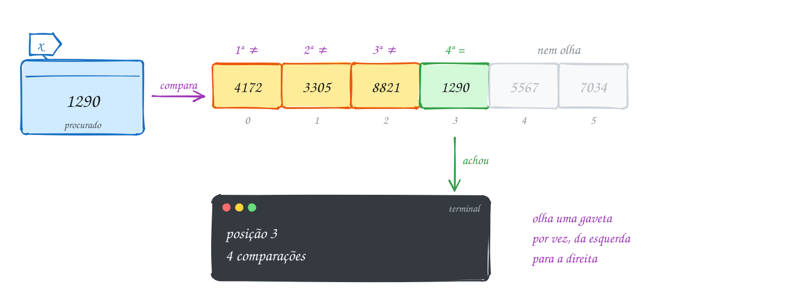
A função conta as comparações num ponteiro:
#include <stdio.h>
// devolve o índice de x em v[0..n-1], ou -1 se x não estiver lá
int busca(const int v[], int n, int x, int *comparacoes) {
*comparacoes = 0;
for (int i = 0; i < n; i++) {
(*comparacoes)++;
if (v[i] == x) {
return i; // achou: para na hora
}
}
return -1; // olhou todos e não achou
}
int main(void) {
int matriculas[] = {4172, 3305, 8821, 1290, 5567, 7034};
int n = sizeof matriculas / sizeof matriculas[0];
int comparacoes;
int pos = busca(matriculas, n, 1290, &comparacoes);
printf("1290: posição %d, %d comparações\n", pos, comparacoes);
pos = busca(matriculas, n, 9999, &comparacoes);
printf("9999: posição %d, %d comparações\n", pos, comparacoes);
return 0;
}
// Saída:
// 1290: posição 3, 4 comparações
// 9999: posição -1, 6 comparações
Teste de mesa da busca por 1290, uma linha por volta do laço:
| i | v[i] | v[i] == 1290? |
comparações | estado da gaveta |
|---|---|---|---|---|
| 0 | 4172 | não | 1 | amarela (olhada) |
| 1 | 3305 | não | 2 | amarela |
| 2 | 8821 | não | 3 | amarela |
| 3 | 1290 | sim | 4 | verde: return 3 |
| 4 | 5567 | cinza (nem olhada) | ||
| 5 | 7034 | cinza |
Para 9999, as 6 linhas seriam "não" e o -1 só sai depois da última.
Duas perguntas por volta: i < n? protege o vetor e v[i] == x? é a busca.
O caminho dá a volta três vezes antes de sair pelo Sim:
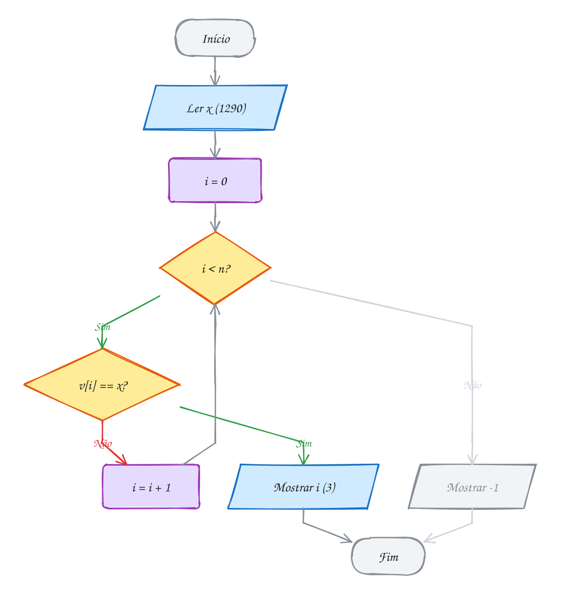
Exemplo A177 · Quantas vezes o aluno passou na catraca
#include <stdio.h>
// procura x a partir da posição inicio; devolve o índice ou -1
int busca_a_partir(const int v[], int n, int x, int inicio, int *comparacoes) {
for (int i = inicio; i < n; i++) {
(*comparacoes)++;
if (v[i] == x) {
return i;
}
}
return -1;
}
int main(void) {
// registro do dia: cada número é uma passagem pela catraca, em ordem
int passagens[] = {3305, 4172, 3305, 8821, 1290, 3305, 7034, 4172};
int n = sizeof passagens / sizeof passagens[0];
int procuradas[] = {3305, 1290, 5567};
for (int k = 0; k < 3; k++) {
int x = procuradas[k];
int comparacoes = 0, vezes = 0;
printf("%d passou nas posições:", x);
// cada achado vira o ponto de partida da próxima busca
int pos = busca_a_partir(passagens, n, x, 0, &comparacoes);
while (pos != -1) {
printf(" %d", pos);
vezes++;
pos = busca_a_partir(passagens, n, x, pos + 1, &comparacoes);
}
printf("%s -> %d vez(es), %d comparações\n",
vezes == 0 ? " nenhuma" : "", vezes, comparacoes);
}
return 0;
}
// Saída:
// 3305 passou nas posições: 0 2 5 -> 3 vez(es), 8 comparações
// 1290 passou nas posições: 4 -> 1 vez(es), 8 comparações
// 5567 passou nas posições: nenhuma -> 0 vez(es), 8 comparações
gcc ~/LPEDC/material/A177.c -o ~/LPEDC/material/A177 && ~/LPEDC/material/A177
Exemplo A178 · A sentinela no fim da fila
#include <stdio.h>
#define N 6
// busca comum: a cada volta, duas perguntas (i < n? e v[i] == x?)
int busca_comum(const int v[], int n, int x, int *perguntas) {
*perguntas = 0;
for (int i = 0; i < n; i++) {
*perguntas += 2; // i < n e v[i] == x
if (v[i] == x) {
return i;
}
}
*perguntas += 1; // o último i < n, que deu falso
return -1;
}
// busca com sentinela: v precisa ter uma gaveta livre em v[n]
int busca_sentinela(int v[], int n, int x, int *perguntas) {
v[n] = x; // a sentinela: agora o laço sempre acha
int i = 0;
*perguntas = 1; // o primeiro v[i] != x
while (v[i] != x) {
i++;
(*perguntas)++;
}
(*perguntas)++; // i < n: achou a de verdade ou a sentinela?
return i < n ? i : -1;
}
int main(void) {
int matriculas[N + 1] = {4172, 3305, 8821, 1290, 5567, 7034}; // v[6] fica livre
int procuradas[] = {4172, 7034, 9999};
int p1, p2;
printf("chave posição comum sentinela\n");
for (int k = 0; k < 3; k++) {
int x = procuradas[k];
int pos = busca_comum(matriculas, N, x, &p1);
busca_sentinela(matriculas, N, x, &p2);
printf("%5d %7d %5d %9d\n", x, pos, p1, p2);
}
return 0;
}
// Saída:
// chave posição comum sentinela
// 4172 0 2 2
// 7034 5 12 7
// 9999 -1 13 8
gcc ~/LPEDC/material/A178.c -o ~/LPEDC/material/A178 && ~/LPEDC/material/A178
Exercício E529 · ★☆☆
O extrato do Pix do mês tem estes valores, em reais, do mais antigo para o mais recente: 50, 120, 35, 50, 80, 50, 15. Você quer achar a ÚLTIMA transação de R$ 50 (a mais recente). Escreva a função
int ultima_ocorrencia(const int v[], int n, int x, int *comparacoes)
que devolve o índice da última ocorrência de x (ou -1) e conta as comparações. Procure de um jeito que pare assim que achar. Teste com 50 e com 200.
Saída esperada:
Última de R$ 50: posição 5 (2 comparações)
Última de R$ 200: posição -1 (7 comparações)
Exercício E531 · ★★☆
A tabela de preços de uma loja está em ordem crescente: 12, 19, 25, 31, 38, 44, 52, 60, 73, 89. Escreva duas funções que devolvem o índice (ou -1) e contam quantos elementos olharam:
busca: a busca sequencial comum;
busca_ordenada: aproveita a ordem e desiste assim que encontra um preço
MAIOR que o procurado.
Teste as duas com R$ 47 (não existe) e R$ 60.
Saída esperada:
R$ 47: comum -1 (10 olhados), ordenada -1 (7 olhados)
R$ 60: comum 7 (8 olhados), ordenada 7 (8 olhados)
Exercício E532 · ★★☆
O estoque do mercadinho é um vetor de structs:
typedef struct { int codigo; char nome[20]; double preco; } Produto;
{1010, "Arroz 5kg", 27.50}, {2050, "Café 500g", 18.90},
{3300, "Feijão 1kg", 8.40}, {4120, "Leite 1L", 5.20}
Escreva Produto *busca_produto(Produto v[], int n, int codigo), que devolve o ENDEREÇO do produto dentro do vetor (ou NULL). No main, busque 2050, mostre o produto e dê um reajuste de 10% pelo ponteiro devolvido. Depois mostre estoque[1] direto do vetor e busque 9999.
Saída esperada:
2050 Café 500g R$ 18.90
No vetor: Café 500g R$ 20.79
9999: não cadastrado
Exercício E534 · ★★★
Na agenda do celular você liga muito mais para umas pessoas do que para outras. Uma heurística antiga é o MOVER PARA A FRENTE: toda vez que a busca acha um contato, ele vai para a posição 0 e os anteriores andam uma casa.
Agenda inicial: "Chefe", "Banco", "Pizzaria", "Ana", "Mãe". Acessos, nessa ordem: Mãe, Ana, Mãe, Mãe, Pizzaria, Mãe.
Mostre a agenda depois de cada acesso e compare o total de comparações com uma busca que nunca mexe na agenda.
Saída esperada:
Mãe -> Mãe Chefe Banco Pizzaria Ana
Ana -> Ana Mãe Chefe Banco Pizzaria
Mãe -> Mãe Ana Chefe Banco Pizzaria
Mãe -> Mãe Ana Chefe Banco Pizzaria
Pizzaria -> Pizzaria Mãe Ana Chefe Banco
Mãe -> Mãe Pizzaria Ana Chefe Banco
Sem mover: 27 comparações
Movendo para a frente: 20 comparações
No jogo "pensei num número de 1 a 100", quem chuta 1, 2, 3 e assim por diante pode precisar de 100 tentativas. Quem chuta 50, ouve "menor", chuta 25, ouve "maior", chuta 37, acerta em no máximo 7. A diferença é que cada resposta "maior" ou "menor" descarta metade dos números que ainda eram possíveis. A busca sequencial do 0089 não aproveita nada disso, porque olhar um elemento não diz nada sobre os outros. Num vetor ordenado, diz.
A busca binária é esse jogo num vetor ordenado. Você olha a gaveta do meio. Se ela tem a chave, acabou. Se a chave é maior que o valor do meio, ela só pode estar à direita, e a metade esquerda é descartada. Se é menor, a direita é descartada. Cada comparação joga fora metade do que sobrou (ZIVIANI, 2010, cap. 5).
O código guarda o pedaço que ainda pode conter a chave entre dois índices,
ini e fim, com os dois extremos incluídos. Essa frase vira um
invariante, a afirmação que o assunto 0073 ensinou a manter verdadeira em
toda volta do laço: "se x está no vetor, está em v[ini..fim]". No começo,
ini vale 0 e fim vale n - 1, e o invariante vale porque o pedaço é o
vetor inteiro. A cada volta, um dos extremos pula para depois do meio, e o
invariante continua valendo. Quando ini passa de fim, o pedaço está vazio,
e o invariante garante que a chave não está no vetor: a resposta é -1
(FEOFILOFF, 2009).
while (ini <= fim) {
int meio = ini + (fim - ini) / 2;
if (v[meio] == x) return meio;
if (v[meio] < x) ini = meio + 1; // descarta a esquerda e o meio
else fim = meio - 1; // descarta a direita e o meio
}
return -1;
O ganho aparece no custo. Com 15 elementos, o pedaço passa por 15, 7, 3 e 1: no máximo 4 voltas. Com um milhão de elementos, 20 voltas. No pior caso a busca faz ⌊log₂ n⌋ + 1 voltas, e na notação do 0072 isso é O(log n) (ZIVIANI, 2010, cap. 5). Dobrar o vetor custa só uma volta a mais, enquanto na busca sequencial dobrar o vetor dobra o trabalho.
O preço é a pré-condição: o vetor tem de estar ordenado. Num vetor bagunçado, a busca binária não trava nem dá erro, ela só responde errado, e sem avisar (FEOFILOFF, 2009). Se o vetor muda o tempo todo, manter a ordem pode custar mais que a economia na busca; os assuntos 0091 a 0096 tratam de como ordenar.
Repare na conta do meio. A forma (ini + fim) / 2 parece natural, mas a soma
pode passar de INT_MAX, o maior int, em vetores com mais de um bilhão de
elementos, e o resultado vira um índice negativo. A forma
ini + (fim - ini) / 2 dá o mesmo meio sem nunca somar dois índices grandes.
Esse bug ficou anos escondido em bibliotecas usadas no mundo todo (BLOCH,
2006).
[!WARNING] Busca binária é famosa por erros de um. Com o intervalo fechado
[ini, fim],while (ini < fim)deixa de olhar o último candidato efim = meiopode nunca encolher. Escolha um estilo (fechado ou semiaberto[ini, fim)) e siga as regras dele.
O catálogo do atacadão tem 15 códigos em ordem e você procura o 216. O meio (índice 7) tem 189, menor: a esquerda sai. O novo meio (11) tem 245, maior: a direita sai. Na terceira volta, o meio (9) é o 216:
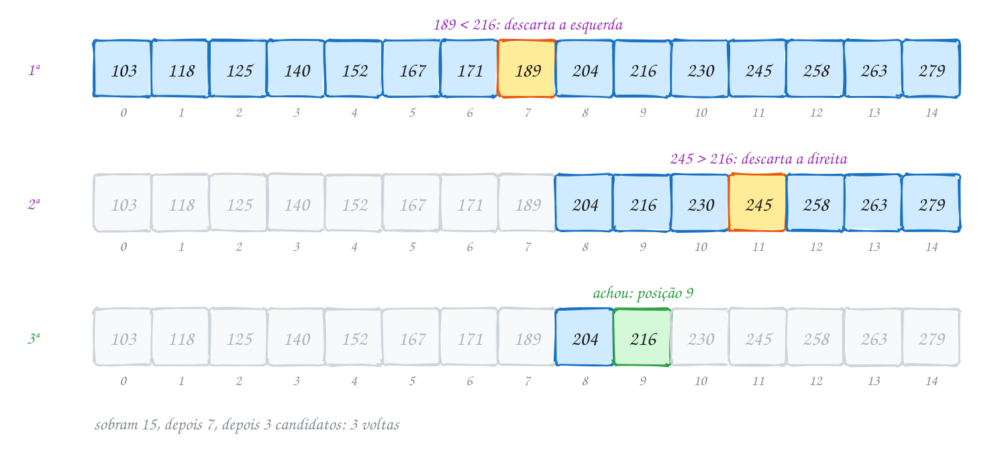
Um printf mostra o intervalo de cada volta:
#include <stdio.h>
// v está em ordem crescente; devolve o índice de x ou -1
int busca_binaria(const int v[], int n, int x, int *voltas) {
int ini = 0, fim = n - 1;
*voltas = 0;
while (ini <= fim) { // ainda sobra alguém no intervalo
int meio = ini + (fim - ini) / 2;
(*voltas)++;
printf(" ini=%2d fim=%2d meio=%2d v[meio]=%d\n", ini, fim, meio, v[meio]);
if (v[meio] == x) {
return meio;
}
if (v[meio] < x) {
ini = meio + 1; // x só pode estar à direita
} else {
fim = meio - 1; // x só pode estar à esquerda
}
}
return -1;
}
int main(void) {
int codigos[] = {103, 118, 125, 140, 152, 167, 171, 189,
204, 216, 230, 245, 258, 263, 279};
int n = sizeof codigos / sizeof codigos[0];
int voltas;
printf("Procurando 216:\n");
int pos = busca_binaria(codigos, n, 216, &voltas);
printf("posição %d em %d voltas\n", pos, voltas);
printf("Procurando 150:\n");
pos = busca_binaria(codigos, n, 150, &voltas);
printf("posição %d em %d voltas\n", pos, voltas);
return 0;
}
// Saída:
// Procurando 216:
// ini= 0 fim=14 meio= 7 v[meio]=189
// ini= 8 fim=14 meio=11 v[meio]=245
// ini= 8 fim=10 meio= 9 v[meio]=216
// posição 9 em 3 voltas
// Procurando 150:
// ini= 0 fim=14 meio= 7 v[meio]=189
// ini= 0 fim= 6 meio= 3 v[meio]=140
// ini= 4 fim= 6 meio= 5 v[meio]=167
// ini= 4 fim= 4 meio= 4 v[meio]=152
// posição -1 em 4 voltas
A busca por 150, que não está no catálogo:
| volta | ini | fim | meio | v[meio] | decisão |
|---|---|---|---|---|---|
| 1 | 0 | 14 | 7 | 189 | 189 > 150: fim = 6 |
| 2 | 0 | 6 | 3 | 140 | 140 < 150: ini = 4 |
| 3 | 4 | 6 | 5 | 167 | 167 > 150: fim = 4 |
| 4 | 4 | 4 | 4 | 152 | 152 > 150: fim = 3 |
| fim | 4 | 3 | ini > fim: devolve -1 |
O ini = 4 final é a posição em que o 150 deveria entrar (exemplo A180).
Três perguntas por volta, e cada volta mexe em ini ou em fim, nunca
nos dois:
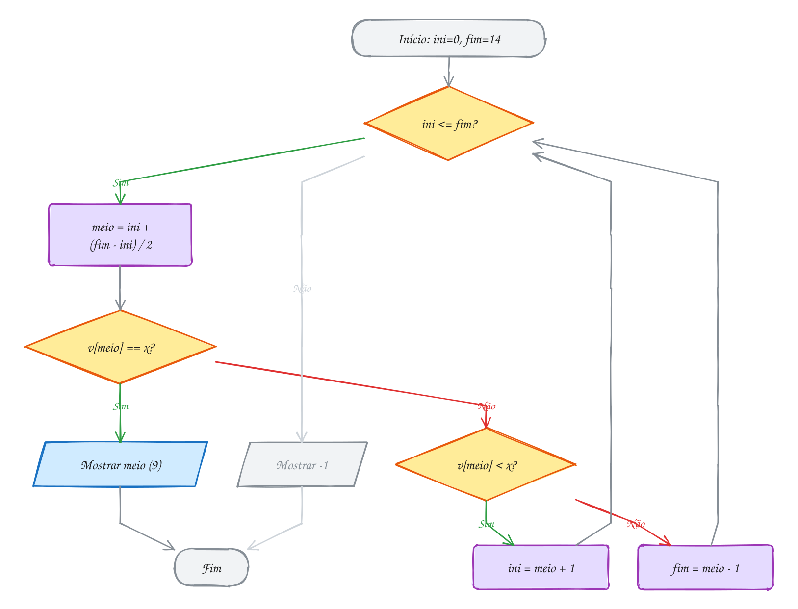
Exemplo A179 · Um milhão de notas fiscais
#include <stdio.h>
#define N 1000000
int sequencial(const int v[], int n, int x, long *passos) {
*passos = 0;
for (int i = 0; i < n; i++) {
(*passos)++;
if (v[i] == x) {
return i;
}
}
return -1;
}
int binaria(const int v[], int n, int x, long *passos) {
int ini = 0, fim = n - 1;
*passos = 0;
while (ini <= fim) {
int meio = ini + (fim - ini) / 2;
(*passos)++;
if (v[meio] == x) {
return meio;
}
if (v[meio] < x) {
ini = meio + 1;
} else {
fim = meio - 1;
}
}
return -1;
}
int main(void) {
static int notas[N]; // 4 MB: static, fora da pilha
for (int i = 0; i < N; i++) {
notas[i] = 500000 + 3 * i; // números das notas, em ordem crescente
}
// a primeira, uma do meio, a última e uma que não existe
int procuradas[] = {500000, 2000000, 3499997, 2000001};
long ps, pb;
printf(" nota posição sequencial binária\n");
for (int k = 0; k < 4; k++) {
int pos = sequencial(notas, N, procuradas[k], &ps);
binaria(notas, N, procuradas[k], &pb);
printf("%8d %8d %10ld %7ld\n", procuradas[k], pos, ps, pb);
}
return 0;
}
// Saída (a binária nunca passa de 20 voltas: 2^20 > 1 milhão):
// nota posição sequencial binária
// 500000 0 1 19
// 2000000 500000 500001 19
// 3499997 999999 1000000 20
// 2000001 -1 1000000 20
gcc ~/LPEDC/material/A179.c -o ~/LPEDC/material/A179 && ~/LPEDC/material/A179
Exemplo A180 · Em qual faixa de frete cai o pacote?
#include <stdio.h>
// devolve a primeira posição com limite[i] >= peso (ou n, se nenhuma serve).
// Intervalo semiaberto [ini, fim): fim aponta uma gaveta DEPOIS do fim.
int primeira_faixa(const double limite[], int n, double peso, int *voltas) {
int ini = 0, fim = n;
*voltas = 0;
while (ini < fim) {
int meio = ini + (fim - ini) / 2;
(*voltas)++;
if (limite[meio] < peso) {
ini = meio + 1; // essa faixa é pequena demais
} else {
fim = meio; // essa serve; talvez uma anterior também sirva
}
}
return ini;
}
int main(void) {
double limite[] = {1, 2, 5, 10, 20, 30}; // até X kg
double preco[] = {12.90, 18.50, 27.00, 39.90, 59.90, 84.00};
int n = 6;
double pesos[] = {7.5, 2.0, 0.3, 31.0};
int voltas;
for (int k = 0; k < 4; k++) {
int f = primeira_faixa(limite, n, pesos[k], &voltas);
if (f < n) {
printf("%4.1f kg: faixa até %2.0f kg, R$ %5.2f (%d voltas)\n",
pesos[k], limite[f], preco[f], voltas);
} else {
printf("%4.1f kg: acima do limite (%d voltas)\n", pesos[k], voltas);
}
}
return 0;
}
// Saída:
// 7.5 kg: faixa até 10 kg, R$ 39.90 (3 voltas)
// 2.0 kg: faixa até 2 kg, R$ 18.50 (3 voltas)
// 0.3 kg: faixa até 1 kg, R$ 12.90 (3 voltas)
// 31.0 kg: acima do limite (2 voltas)
gcc ~/LPEDC/material/A180.c -o ~/LPEDC/material/A180 && ~/LPEDC/material/A180
Exercício E535 · ★☆☆
Os armários livres do vestiário estão numa lista ordenada: 4, 9, 13, 21, 30, 38, 47, 55, 62. Escreva void procura(const int v[], int n, int x), uma busca binária que mostra cada volta (ini, fim, meio e o valor do meio) e, no fim, a posição achada ou a mensagem de falha, sempre com o total de voltas. No "não achou", mostre também os valores de ini e fim que pararam o laço. Procure 47, 5 e 62.
Saída esperada:
Procurando 47
ini=0 fim=8 meio=4 (30)
ini=5 fim=8 meio=6 (47)
achou na posição 6 em 2 voltas
Procurando 5
ini=0 fim=8 meio=4 (30)
ini=0 fim=3 meio=1 (9)
ini=0 fim=0 meio=0 (4)
não achou em 3 voltas (parou com ini=1 fim=0)
Procurando 62
ini=0 fim=8 meio=4 (30)
ini=5 fim=8 meio=6 (47)
ini=7 fim=8 meio=7 (55)
ini=8 fim=8 meio=8 (62)
achou na posição 8 em 4 voltas
Exercício E537 · ★★☆
As avaliações de um app (de 1 a 5 estrelas) já estão ordenadas:
1, 1, 2, 3, 3, 3, 3, 4, 4, 5, 5, 5
Para cada nota de 1 a 5, mostre em que posições ela aparece e quantas vezes, usando DUAS buscas binárias por nota (nada de percorrer o vetor contando): uma acha a primeira posição com valor >= nota, a outra a primeira posição com valor > nota.
Saída esperada:
Nota 1: posições 0 a 1, 2 avaliações
Nota 2: posições 2 a 2, 1 avaliação
Nota 3: posições 3 a 6, 4 avaliações
Nota 4: posições 7 a 8, 2 avaliações
Nota 5: posições 9 a 11, 3 avaliações
Exercício E538 · ★★☆
Busca binária também funciona com strings, desde que estejam em ordem. Escreva int busca_nome(const char *v[], int n, const char *nome, int *voltas) e teste com as capitais abaixo, procurando "Natal" e "Palmas":
"Aracaju", "Belém", "Boa Vista", "Cuiabá", "Curitiba", "Florianópolis",
"Fortaleza", "Goiânia", "Maceió", "Manaus", "Natal", "Recife",
"Salvador", "São Paulo", "Teresina", "Vitória"
Saída esperada:
Natal: posição 10 (4 voltas)
Palmas: posição -1 (4 voltas)
Exercício E540 · ★★★
Busca binária não precisa de vetor: basta uma pergunta de sim ou não que muda de resposta uma única vez. Um terreno quadrado tem que caber numa área de A m². Qual o maior lado INTEIRO possível? Ou seja: o maior L com L * L <= A. Sem sqrt: faça uma busca binária no intervalo de 0 a A e conte as voltas. Teste com 50, 1000000, 2147395600 e 2147483647.
Saída esperada:
50 m²: lado 7 m (6 voltas)
1000000 m²: lado 1000 m (20 voltas)
2147395600 m²: lado 46340 m (31 voltas)
2147483647 m²: lado 46340 m (31 voltas)
No app de delivery, cinco restaurantes prometem entregar em 42, 17, 35, 8 e 23 minutos. Para mostrar do mais rápido ao mais lento, o vetor precisa estar ordenado. Ordenar também é o que libera a busca binária do 0090, que só funciona em vetor ordenado. O módulo apresenta vários métodos de ordenação, e este é o mais simples de entender.
Imagine cinco pessoas numa fila, que devem ficar da mais baixa para a mais
alta, e só podem trocar de lugar com quem está do lado. Você anda pela fila
comparando cada par de vizinhos e, se o da esquerda for mais alto, troca os
dois. O bubble sort (ordenação por bolha) faz exatamente isso: compara
v[j] com v[j + 1] e troca os dois se o da esquerda for maior. Cada
varredura do começo ao fim do vetor se chama passada (CELES; RANGEL,
2002). O nome vem da imagem dos valores grandes subindo como bolhas, ou, no
desenho com o vetor na horizontal, indo parar no fim.
O que torna o método correto é o que acontece com o maior elemento. Assim que
a passada o encontra, ele vence toda comparação e é carregado troca a troca
até a última gaveta livre. Depois da primeira passada, o maior está no lugar
final; depois da segunda, o segundo maior também, e assim por diante (DEITEL;
DEITEL, 2011, cap. 6). Daí saem duas regras. Bastam n - 1 passadas, porque
com os n - 1 maiores no lugar o que sobra só pode ser o menor, já na frente.
E a passada k não precisa olhar as últimas k - 1 gavetas, que já estão
prontas: o laço interno vai até j < n - passada.
Uma terceira regra vem de uma variável bool, a bandeira trocou. Ela
começa cada passada valendo false e vira true a cada troca. Se uma passada
inteira termina sem nenhuma troca, todo vizinho já está em ordem, então o
vetor está ordenado e o laço pode parar antes das n - 1 passadas (CELES;
RANGEL, 2002).
No pior caso, com o vetor ao contrário, a primeira passada compara n - 1
pares, a segunda n - 2, até a última com 1. A soma dá n(n - 1)/2
comparações, e todas viram trocas: o custo é O(n²). No melhor caso, com o
vetor já em ordem e a bandeira ligada, uma passada de n - 1 comparações
basta: O(n) (TENENBAUM; LANGSAM; AUGENSTEIN, 1995, cap. 6).
Uma forma de medir a bagunça de um vetor é contar inversões: pares de
posições i < j com v[i] > v[j], ou seja, dois valores na ordem errada. Em
42 17 35, os pares (42, 17) e (42, 35) são inversões. Cada troca de vizinhos
desfaz exatamente uma inversão, e um vetor aleatório tem cerca de n²/4
delas (CORMEN et al., 2024, cap. 2). Por isso o bubble sort serve para
aprender a ideia, mas não para código real: os métodos dos próximos assuntos
desfazem as mesmas inversões gastando menos.
[!WARNING]
v[j] = v[j + 1]; v[j + 1] = v[j];não troca nada: os dois ficam iguais. Use uma variável auxiliar. Comj < nno laço interno, a última volta lêv[n], fora do vetor.
Cinco restaurantes prometem entregar em 42, 17, 35, 8 e 23 minutos. Na passada 1 o 42 afunda até o fim; na 2, o 35 acha o seu lugar; na 3, o 8 chega à frente. A passada 4 não troca nada e a bandeira encerra:
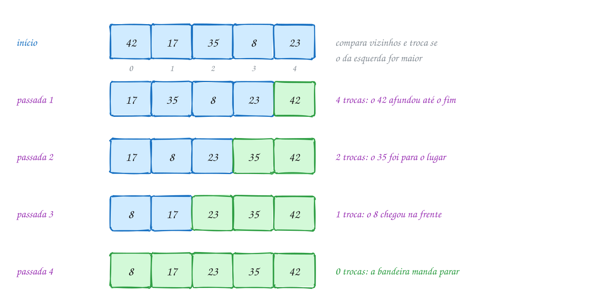
O código conta comparações e trocas:
#include <stdio.h>
#include <stdbool.h>
void mostra(const int v[], int n) {
for (int i = 0; i < n; i++) {
printf("%3d", v[i]);
}
printf("\n");
}
void bubble_sort(int v[], int n) {
int comparacoes = 0, trocas = 0;
for (int passada = 1; passada < n; passada++) {
bool trocou = false;
// os últimos passada-1 já estão no lugar: nem olha
for (int j = 0; j < n - passada; j++) {
comparacoes++;
if (v[j] > v[j + 1]) { // vizinhos fora de ordem: troca
int aux = v[j];
v[j] = v[j + 1];
v[j + 1] = aux;
trocas++;
trocou = true;
}
}
printf("passada %d:", passada);
mostra(v, n);
if (!trocou) {
break; // nenhuma troca: já está ordenado
}
}
printf("%d comparações, %d trocas\n", comparacoes, trocas);
}
int main(void) {
int minutos[] = {42, 17, 35, 8, 23};
int n = 5;
printf("início: ");
mostra(minutos, n);
bubble_sort(minutos, n);
return 0;
}
// Saída:
// início: 42 17 35 8 23
// passada 1: 17 35 8 23 42
// passada 2: 17 8 23 35 42
// passada 3: 8 17 23 35 42
// passada 4: 8 17 23 35 42
// 10 comparações, 7 trocas
A passada 1 por dentro; em negrito, o par comparado:
| j | antes | v[j] > v[j+1]? |
depois |
|---|---|---|---|
| 0 | 42 17 35 8 23 | sim, troca | 17 42 35 8 23 |
| 1 | 17 42 35 8 23 | sim, troca | 17 35 42 8 23 |
| 2 | 17 35 42 8 23 | sim, troca | 17 35 8 42 23 |
| 3 | 17 35 8 42 23 | sim, troca | 17 35 8 23 42 |
Nas quatro passadas: 4 + 3 + 2 + 1 = 10 comparações e 4 + 2 + 1 + 0 = 7 trocas, o número de inversões do vetor original.
O laço de dentro (j) faz uma passada; o de fora repete enquanto a bandeira
indicar troca:
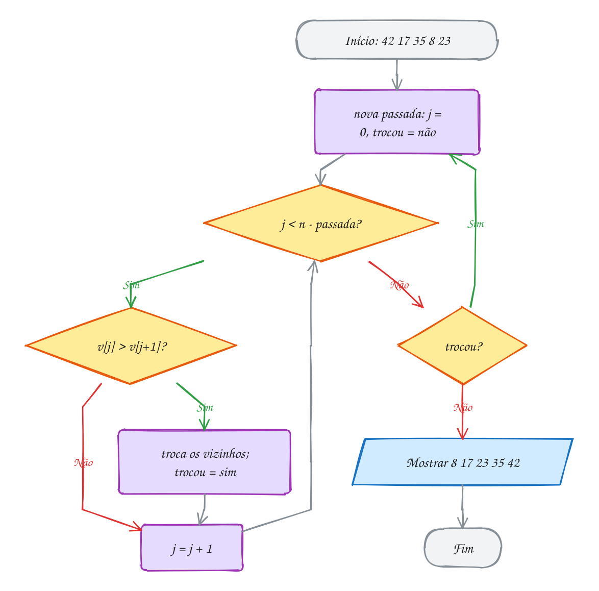
Exemplo A181 · Anagramas: borbulhando as letras
#include <stdio.h>
#include <stdbool.h>
#include <string.h>
// ordena as letras da string s com bubble sort (char também é número)
void ordena_letras(char s[], bool mostrar) {
int n = (int) strlen(s); // o '\0' do fim fica fora
bool trocou = true;
for (int passada = 1; passada < n && trocou; passada++) {
trocou = false;
for (int j = 0; j < n - passada; j++) {
if (s[j] > s[j + 1]) { // compara os códigos das letras
char aux = s[j];
s[j] = s[j + 1];
s[j + 1] = aux;
trocou = true;
}
}
if (mostrar) {
printf(" passada %d: %s\n", passada, s);
}
}
}
bool anagramas(const char *a, const char *b, bool mostrar) {
char x[32], y[32];
if (strlen(a) != strlen(b) || strlen(a) >= sizeof x) {
return false;
}
strcpy(x, a); // ordena cópias: as originais ficam intactas
strcpy(y, b);
ordena_letras(x, mostrar);
ordena_letras(y, false);
return strcmp(x, y) == 0; // mesmas letras ordenadas = anagramas
}
int main(void) {
printf("ordenando \"pernambuco\":\n");
bool r = anagramas("pernambuco", "cobrapenum", true);
printf("pernambuco / cobrapenum: %s\n", r ? "anagramas" : "não");
printf("amor / roma: %s\n", anagramas("amor", "roma", false) ? "anagramas" : "não");
printf("pato / topo: %s\n", anagramas("pato", "topo", false) ? "anagramas" : "não");
return 0;
}
// Saída (a passada 7 não troca nada: a bandeira encerra):
// ordenando "pernambuco":
// passada 1: epnambrcou
// passada 2: enambpcoru
// passada 3: eambncopru
// passada 4: aebmcnopru
// passada 5: abecmnopru
// passada 6: abcemnopru
// passada 7: abcemnopru
// pernambuco / cobrapenum: anagramas
// amor / roma: anagramas
// pato / topo: não
gcc ~/LPEDC/material/A181.c -o ~/LPEDC/material/A181 && ~/LPEDC/material/A181
Exemplo A182 · A bandeirinha que economiza passadas
#include <stdio.h>
#include <stdbool.h>
// versão básica: sempre faz todas as passadas
int bubble_basico(int v[], int n) {
int comparacoes = 0;
for (int passada = 1; passada < n; passada++) {
for (int j = 0; j < n - passada; j++) {
comparacoes++;
if (v[j] > v[j + 1]) {
int aux = v[j];
v[j] = v[j + 1];
v[j + 1] = aux;
}
}
}
return comparacoes;
}
// com a bandeira: para na primeira passada sem troca
int bubble_bandeira(int v[], int n) {
int comparacoes = 0;
bool trocou = true;
for (int passada = 1; passada < n && trocou; passada++) {
trocou = false;
for (int j = 0; j < n - passada; j++) {
comparacoes++;
if (v[j] > v[j + 1]) {
int aux = v[j];
v[j] = v[j + 1];
v[j + 1] = aux;
trocou = true;
}
}
}
return comparacoes;
}
int main(void) {
// ranking quase em ordem: só o último está fora do lugar
int a[] = {12, 15, 21, 30, 34, 47, 52, 49};
int b[] = {12, 15, 21, 30, 34, 47, 52, 49};
// ao contrário: o pior caso
int c[] = {52, 49, 47, 34, 30, 21, 15, 12};
int d[] = {52, 49, 47, 34, 30, 21, 15, 12};
printf("quase ordenado: básico %d, com bandeira %d\n",
bubble_basico(a, 8), bubble_bandeira(b, 8));
printf("invertido: básico %d, com bandeira %d\n",
bubble_basico(c, 8), bubble_bandeira(d, 8));
return 0;
}
// Saída:
// quase ordenado: básico 28, com bandeira 13
// invertido: básico 28, com bandeira 28
gcc ~/LPEDC/material/A182.c -o ~/LPEDC/material/A182 && ~/LPEDC/material/A182
Exercício E541 · ★☆☆
No bolão da firma, os pontos de seis participantes são 18, 31, 7, 25, 31 e 12. Ordene com bubble sort (com a bandeira) em ordem DECRESCENTE, do líder para o lanterna, e mostre o ranking.
Saída esperada:
Ranking: 31 31 25 18 12 7
Exercício E543 · ★★☆
A turma de natação tem as idades 34, 19, 27, 45 e 22. Escreva um bubble sort em ordem crescente, trocando com uma variável auxiliar. Mostre o vetor ao fim de cada passada e, no fim, o total de trocas.
Saída esperada:
passada 1: 19 27 34 22 45
passada 2: 19 27 22 34 45
passada 3: 19 22 27 34 45
passada 4: 19 22 27 34 45
5 trocas
Exercício E544 · ★★☆
Monte a tabela do campeonato. Cada time é uma struct:
typedef struct { char nome[16]; int pontos; int vitorias; } Time;
{"Fortaleza", 68, 19}, {"Flamengo", 70, 20}, {"Botafogo", 79, 23},
{"Palmeiras", 70, 21}, {"Inter", 65, 18}
Ordene com bubble sort: mais pontos primeiro; empatou nos pontos, mais vitórias primeiro. Escreva uma função bool vem_depois(const Time *a, const Time *b) com o critério e use-a no lugar do ">" do bubble.
Saída esperada:
1º Botafogo 79 pts 23 vit
2º Palmeiras 70 pts 21 vit
3º Flamengo 70 pts 20 vit
4º Fortaleza 68 pts 19 vit
5º Inter 65 pts 18 vit
Exercício E545 · ★★★
O bubble tem um ponto fraco: elemento pequeno no fim (uma "tartaruga") anda só UMA casa para a esquerda por passada. No vetor 2, 3, 4, 5, 6, 7, 8, 1, o 1 precisa de 7 passadas para chegar à frente.
O SHAKER SORT (coqueteleira) alterna o sentido: uma passada de ida (esquerda para a direita, leva o maior para o fim) e uma de volta (direita para a esquerda, traz o menor para a frente). Implemente o bubble com bandeira e o shaker, conte passadas (ida e volta contam uma cada) e comparações, e compare no vetor acima.
Saída esperada:
bubble: 7 passadas, 28 comparações
shaker: 3 passadas, 18 comparações
resultado: 1 2 3 4 5 6 7 8
Final da bateria de kart: os tempos da melhor volta, em segundos, foram 58, 31, 47, 19 e 26. Para montar o pódio, ninguém compara vizinhos como no bubble sort do 0091. Você procura o menor tempo, que é o primeiro lugar. Depois procura o menor entre os que sobraram, que é o segundo lugar, e segue até acabarem os pilotos.
Esse é o selection sort (ordenação por seleção): escolher o menor, depois o segundo menor, e assim por diante (FEOFILOFF, 2009). O vetor fica dividido em duas partes. À esquerda está a parte pronta, com os menores já na posição final. À direita está o resto, ainda fora de ordem. Cada passada aumenta a parte pronta em uma gaveta.
A passada i faz duas coisas. Primeiro procura o índice do menor
elemento em v[i..n-1], a parte que ainda não está pronta. Depois troca esse
menor com v[i]. A partir daí a gaveta i nunca mais muda, porque ela já
tem o valor que deve ter no fim (FEOFILOFF, 2009). Na primeira passada dos
tempos do kart, o menor é o 19, na gaveta 3, e ele troca de lugar com o 58 da
gaveta 0.
Repare que a busca guarda o índice do menor, e não o valor. É o padrão "maior/menor" do assunto 0025 com um detalhe a mais: para trocar no fim da passada, você precisa saber onde o menor está. Guardar só o valor 19 responderia qual é o menor, mas não diria qual gaveta trocar.
O custo em comparações não depende da entrada. Achar o menor exige olhar
todos os que sobraram, e nenhum atalho diz que o menor já foi visto. Assim, o
método faz n(n - 1)/2 comparações em todos os casos, mesmo com o vetor
já em ordem: O(n²) (ZIVIANI, 2010, cap. 4). A vantagem está nas
trocas: no máximo uma por passada, n - 1 no total, contra até
n(n - 1)/2 do bubble sort. Isso pesa quando mover um elemento custa caro,
como num vetor de struct grandes.
Um método de ordenação é estável quando elementos com chaves iguais saem na mesma ordem relativa em que entraram. Se dois pilotos fizeram 31 segundos e a Ana aparecia antes do Bruno, um método estável mantém Ana antes de Bruno. O selection sort é instável, porque a troca é de longa distância: o 19 salta da gaveta 3 para a 0 e manda o 58 para a gaveta 3, por cima de quem estiver no meio. Um elemento igual a outro pode pular para trás dele nessa viagem (FEOFILOFF, 2009).
O método também ordena in-place, isto é, dentro do próprio vetor, sem precisar de um segundo vetor: além dele, só usa algumas variáveis, e a memória extra é O(1) (FEOFILOFF, 2009).
[!WARNING] Trocar dentro do laço que procura o menor ordena, mas perde a vantagem das poucas trocas. Esquecer de reiniciar
menor = ia cada passada fazmenorapontar para a parte pronta.
Os tempos da melhor volta numa bateria de kart, em segundos: 58, 31, 47, 19 e
26. Cada linha é uma passada: a gaveta roxa é a posição i, a amarela é o
menor achado; depois da troca, a gaveta vira verde e fica:
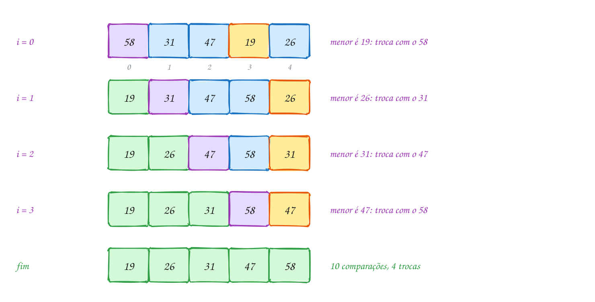
Em C:
#include <stdio.h>
void mostra(const int v[], int n) {
for (int i = 0; i < n; i++) {
printf("%3d", v[i]);
}
printf("\n");
}
void selection_sort(int v[], int n) {
int comparacoes = 0, trocas = 0;
for (int i = 0; i < n - 1; i++) {
int menor = i; // índice do menor de v[i..n-1]
for (int j = i + 1; j < n; j++) {
comparacoes++;
if (v[j] < v[menor]) {
menor = j;
}
}
if (menor != i) { // uma troca só por passada
int aux = v[i];
v[i] = v[menor];
v[menor] = aux;
trocas++;
}
printf("i = %d: ", i);
mostra(v, n);
}
printf("%d comparações, %d trocas\n", comparacoes, trocas);
}
int main(void) {
int tempos[] = {58, 31, 47, 19, 26}; // segundos por volta
int n = 5;
printf("início: ");
mostra(tempos, n);
selection_sort(tempos, n);
return 0;
}
// Saída:
// início: 58 31 47 19 26
// i = 0: 19 31 47 58 26
// i = 1: 19 26 47 58 31
// i = 2: 19 26 31 58 47
// i = 3: 19 26 31 47 58
// 10 comparações, 4 trocas
A passada i = 0. O menor começa na gaveta 0:
| j | v[j] | v[menor] antes | v[j] < v[menor]? |
menor |
|---|---|---|---|---|
| 0 (58) | ||||
| 1 | 31 | 58 | sim | 1 (31) |
| 2 | 47 | 31 | não | 1 |
| 3 | 19 | 31 | sim | 3 (19) |
| 4 | 26 | 19 | não | 3 |
Fim da passada: troca v[0] (58) com v[3] (19). As passadas seguintes
fazem 3, 2 e 1 comparações: 10 no total.
A caixa "acha o menor" esconde um laço inteiro (a tabela); a troca fica fora dele:
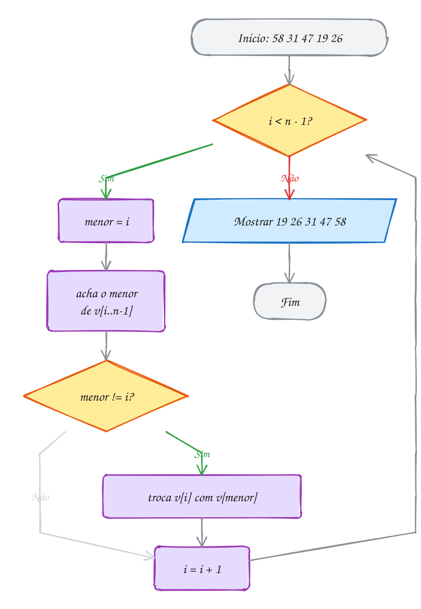
Exemplo A183 · Selection não se importa com a ordem de entrada
#include <stdio.h>
// selection sort que devolve comparações e trocas
void selection_sort(int v[], int n, int *comparacoes, int *trocas) {
*comparacoes = 0;
*trocas = 0;
for (int i = 0; i < n - 1; i++) {
int menor = i;
for (int j = i + 1; j < n; j++) {
(*comparacoes)++; // o laço de dentro roda inteiro, sempre
if (v[j] < v[menor]) {
menor = j;
}
}
if (menor != i) {
int aux = v[i];
v[i] = v[menor];
v[menor] = aux;
(*trocas)++;
}
}
}
void testa(const char *nome, int v[], int n) {
int c, t;
selection_sort(v, n, &c, &t);
printf("%-11s %2d comparações, %d trocas\n", nome, c, t);
}
int main(void) {
// pesos de caixas de mudança (kg): trocar caixa é caro, olhar é barato
int ordenado[] = {5, 8, 12, 20, 25, 31};
int invertido[] = {31, 25, 20, 12, 8, 5};
int misturado[] = {20, 5, 31, 8, 25, 12};
int menor_no_fim[] = {8, 12, 20, 25, 31, 5};
testa("ordenado:", ordenado, 6);
testa("invertido:", invertido, 6);
testa("misturado:", misturado, 6);
testa("5 no fim:", menor_no_fim, 6);
return 0;
}
// Saída (comparações: sempre 5+4+3+2+1 = 15; trocas: nunca mais que n - 1 = 5):
// ordenado: 15 comparações, 0 trocas
// invertido: 15 comparações, 3 trocas
// misturado: 15 comparações, 3 trocas
// 5 no fim: 15 comparações, 5 trocas
gcc ~/LPEDC/material/A183.c -o ~/LPEDC/material/A183 && ~/LPEDC/material/A183
Exemplo A184 · A troca que passa por cima
#include <stdio.h>
typedef struct {
int nota;
char nome[8];
} Aluno;
void mostra(const Aluno v[], int n) {
for (int i = 0; i < n; i++) {
printf(" %d-%s", v[i].nota, v[i].nome);
}
printf("\n");
}
// selection sort por nota
void selection_sort(Aluno v[], int n) {
for (int i = 0; i < n - 1; i++) {
int menor = i;
for (int j = i + 1; j < n; j++) {
if (v[j].nota < v[menor].nota) {
menor = j;
}
}
if (menor != i) {
Aluno aux = v[i];
v[i] = v[menor];
v[menor] = aux;
}
}
}
int main(void) {
// em ordem alfabética: Ana antes de Bia
Aluno turma[] = {{7, "Ana"}, {7, "Bia"}, {5, "Caio"}};
printf("antes: ");
mostra(turma, 3);
selection_sort(turma, 3);
printf("depois:");
mostra(turma, 3);
printf("Bia passou na frente de Ana: a ordem dos empatados mudou.\n");
return 0;
}
// Saída:
// antes: 7-Ana 7-Bia 5-Caio
// depois: 5-Caio 7-Bia 7-Ana
// Bia passou na frente de Ana: a ordem dos empatados mudou.
gcc ~/LPEDC/material/A184.c -o ~/LPEDC/material/A184 && ~/LPEDC/material/A184
Exercício E547 · ★☆☆
Uma variação do selection: em vez de procurar o MENOR e pôr na frente, procure o MAIOR e ponha no FIM. A parte pronta cresce pela direita. Ordene os preços 89, 45, 120, 30, 75, 60 e mostre o vetor depois de cada passada (fim é a gaveta que recebe o maior).
Saída esperada:
fim = 5: 89 45 60 30 75 120
fim = 4: 75 45 60 30 89 120
fim = 3: 30 45 60 75 89 120
fim = 2: 30 45 60 75 89 120
fim = 1: 30 45 60 75 89 120
Exercício E549 · ★★☆
Monte a lista de chamada em ordem alfabética com selection sort. Os nomes ficam em const char *alunos[] = {"Rafael", "Ana", "Lucas", "Beatriz", "Diego", "Carla"}. Não copie letras: troque só os PONTEIROS. Mostre a lista numerada e quantas trocas foram feitas.
Saída esperada:
1. Ana
2. Beatriz
3. Carla
4. Diego
5. Lucas
6. Rafael
5 trocas de ponteiro
Exercício E550 · ★★☆
Um site de passagens achou 8 voos: R$ 420, 315, 689, 298, 512, 350, 275 e 601. A tela só mostra os 3 MAIS BARATOS. Ordenar tudo é desperdício: o selection coloca um menor no lugar por passada, então bastam 3 passadas. Escreva int k_menores(int v[], int n, int k), que faz só as k primeiras passadas e devolve quantas comparações fez.
Saída esperada:
3 mais baratas: R$ 275, R$ 298, R$ 315
18 comparações (ordenar tudo custaria 28)
Exercício E552 · ★★★
Os produtos de uma loja têm uma descrição de 200 bytes, então cada struct é pesada de mover:
typedef struct { int codigo; double preco; char descricao[200]; } Produto;
{11, 249.90, "Fone sem fio"}, {12, 89.90, "Mouse"},
{13, 1299.00, "Monitor 24"}, {14, 159.90, "Teclado"},
{15, 49.90, "Mousepad"}
Mostre os produtos do mais barato ao mais caro SEM mexer no vetor loja. Truque: crie int ordem[5] = {0, 1, 2, 3, 4} e ordene ESSE vetor com selection sort, comparando loja[ordem[j]].preco. É a ORDENAÇÃO INDIRETA. (O 216 é o tamanho do Produto numa máquina de 64 bits comum.)
Saída esperada:
Do mais barato ao mais caro:
15 Mousepad R$ 49.90
12 Mouse R$ 89.90
14 Teclado R$ 159.90
11 Fone sem fio R$ 249.90
13 Monitor 24 R$ 1299.00
loja[0] continua sendo: Fone sem fio
3 trocas de 4 bytes, em vez de 216 bytes
Numa rodada de buraco, você recebe as cartas uma a uma: 7, 4, 9, 2, 5. Ninguém espera a mão inteira para arrumar. Cada carta nova é encaixada no lugar certo entre as que você já segura, que já estão em ordem. O 4 vai antes do 7; o 9 fica no fim; o 2 atravessa a mão até a ponta esquerda.
Esse é o insertion sort (ordenação por inserção): cada elemento novo é
inserido no lugar certo de uma parte que já está ordenada (CORMEN et al.,
2024, cap. 2). Como no selection sort do 0092, o vetor tem uma parte pronta à
esquerda, v[0..j-1]. A diferença está no que "pronta" quer dizer. No
selection, a parte pronta já tem os menores do vetor inteiro, no lugar final.
Aqui ela está só em ordem entre si: um valor que ainda não chegou pode
precisar entrar no meio dela (FEOFILOFF, 2009).
Cada passo encaixa v[j] na parte pronta. Você guarda o valor em x. Depois
anda para a esquerda a partir de j - 1 e, enquanto o elemento olhado for
maior que x, empurra esse elemento uma casa para a direita. Esse
movimento é um deslocamento: uma única escrita, e não uma troca de dois
valores. Quando você acha um elemento menor ou igual a x, ou chega ao começo
do vetor, a gaveta logo à direita dele, v[i + 1], ficou livre, e x entra
ali (FEOFILOFF, 2009).
int x = v[j];
int i = j - 1;
while (i >= 0 && v[i] > x) {
v[i + 1] = v[i]; // desloca uma casa para a direita
i--;
}
v[i + 1] = x;
Guardar x antes do laço é obrigatório. O primeiro deslocamento escreve em
v[j], a gaveta onde x estava, e sem a cópia o valor se perderia.
O custo depende de quão bagunçado o vetor está. Cada deslocamento desfaz uma
inversão (o par fora de ordem do 0091), como a troca do bubble sort, mas
com uma escrita em vez das três de uma troca. No pior caso, com o vetor ao
contrário, cada elemento atravessa toda a parte pronta, e o total é
n(n - 1)/2 comparações: O(n²). No melhor caso, com o vetor já ordenado,
cada elemento compara uma vez e fica onde está: n - 1 comparações, O(n)
(CORMEN et al., 2024, cap. 2). Por isso o insertion sort é o melhor dos três
métodos simples, e bibliotecas de ordenação o usam para pedaços pequenos, de
16 a 32 posições, dentro de métodos mais rápidos.
Duas propriedades fecham o retrato. O insertion sort é estável (a
definição está no 0092): o laço para no primeiro elemento que não é maior
que x, ou seja, para num igual, e x entra depois dele, mantendo a ordem de
chegada. E ele é online: consegue ordenar à medida que os dados chegam,
sem conhecer a entrada inteira, como a mão de cartas que você arruma a cada
compra (FEOFILOFF, 2009).
[!WARNING] Escreva
while (i >= 0 && v[i] > x). Na ordem inversa, comi = -1o programa lêv[-1]. O curto-circuito do&&(0013) protege o vetor.
Numa rodada de buraco, as cartas chegam uma a uma: 7, 4, 9, 2, 5. Cada linha é uma carta nova: verde é a mão arrumada, amarela é a carta que entrou. O 9 não anda; o 2 atravessa a mão inteira:
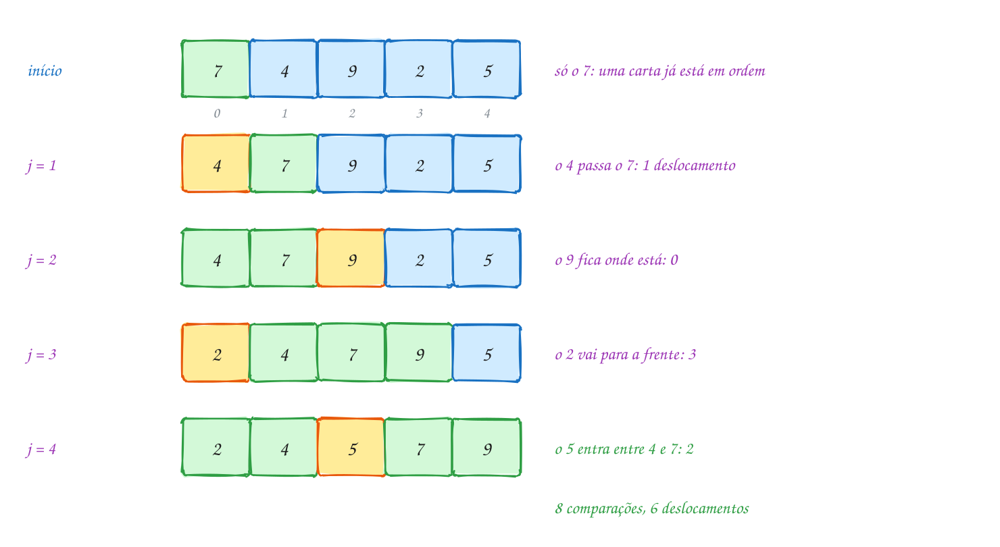
A função maior só conta as comparações:
#include <stdio.h>
#include <stdbool.h>
static int comparacoes = 0;
// a > b, contando a comparação
bool maior(int a, int b) {
comparacoes++;
return a > b;
}
void mostra(const int v[], int n) {
for (int i = 0; i < n; i++) {
printf("%3d", v[i]);
}
printf("\n");
}
void insertion_sort(int v[], int n) {
int deslocamentos = 0;
for (int j = 1; j < n; j++) {
int x = v[j]; // a carta que vai ser encaixada
int i = j - 1;
while (i >= 0 && maior(v[i], x)) {
v[i + 1] = v[i]; // abre espaço: empurra para a direita
deslocamentos++;
i--;
}
v[i + 1] = x; // encaixa no buraco
printf("j = %d (x = %d):", j, x);
mostra(v, n);
}
printf("%d comparações, %d deslocamentos\n", comparacoes, deslocamentos);
}
int main(void) {
int mao[] = {7, 4, 9, 2, 5};
int n = 5;
printf("início: ");
mostra(mao, n);
insertion_sort(mao, n);
return 0;
}
// Saída:
// início: 7 4 9 2 5
// j = 1 (x = 4): 4 7 9 2 5
// j = 2 (x = 9): 4 7 9 2 5
// j = 3 (x = 2): 2 4 7 9 5
// j = 4 (x = 5): 2 4 5 7 9
// 8 comparações, 6 deslocamentos
O encaixe do 2 (j = 3), o mais caro. A mão antes é 4 7 9 | 2 5:
| i | v[i] | v[i] > 2? |
o que acontece | vetor |
|---|---|---|---|---|
| 2 | 9 | sim | v[3] = 9 |
4 7 9 9 5 |
| 1 | 7 | sim | v[2] = 7 |
4 7 7 9 5 |
| 0 | 4 | sim | v[1] = 4 |
4 4 7 9 5 |
| -1 | (i >= 0 falso: nem compara) |
v[0] = 2 |
2 4 7 9 5 |
Somando todos os encaixes: 1 + 1 + 3 + 3 = 8 comparações e 1 + 0 + 3 + 2 = 6 deslocamentos.
O laço de dentro para por dois motivos: acabou o vetor ou achou alguém que não é maior:
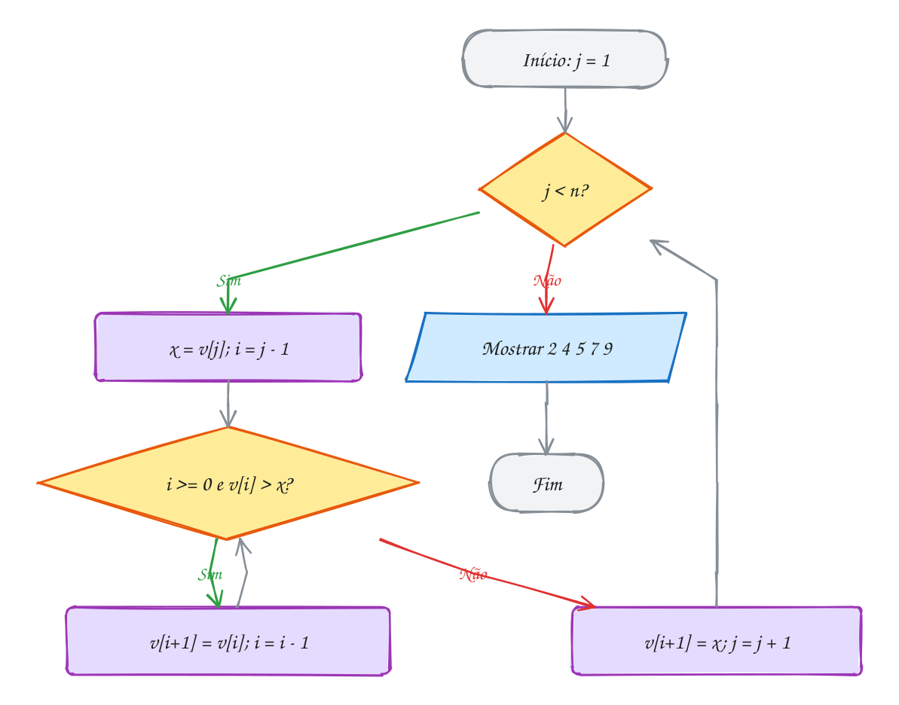
Exemplo A185 · A triagem que respeita a ordem de chegada
#include <stdio.h>
typedef struct {
char nome[10];
int chegada; // ordem em que entrou no pronto-socorro
int prioridade; // 1 = urgente, 2 = pouco urgente, 3 = não urgente
} Paciente;
// insertion sort por prioridade: só empurra quem é ESTRITAMENTE maior
void ordena_triagem(Paciente v[], int n) {
for (int j = 1; j < n; j++) {
Paciente x = v[j]; // a struct inteira é copiada
int i = j - 1;
while (i >= 0 && v[i].prioridade > x.prioridade) {
v[i + 1] = v[i];
i--;
}
v[i + 1] = x; // para atrás de quem tem a mesma prioridade
}
}
int main(void) {
Paciente fila[] = {
{"Rita", 1, 3}, {"Paulo", 2, 2}, {"Joana", 3, 1},
{"Caio", 4, 3}, {"Lia", 5, 1}, {"Beto", 6, 2},
};
int n = 6;
ordena_triagem(fila, n);
for (int k = 0; k < n; k++) {
printf("prioridade %d: %-6s (chegou em %dº)\n",
fila[k].prioridade, fila[k].nome, fila[k].chegada);
}
return 0;
}
// Saída (empatados na prioridade continuam na ordem de chegada: é estável):
// prioridade 1: Joana (chegou em 3º)
// prioridade 1: Lia (chegou em 5º)
// prioridade 2: Paulo (chegou em 2º)
// prioridade 2: Beto (chegou em 6º)
// prioridade 3: Rita (chegou em 1º)
// prioridade 3: Caio (chegou em 4º)
gcc ~/LPEDC/material/A185.c -o ~/LPEDC/material/A185 && ~/LPEDC/material/A185
Exemplo A186 · Quase em ordem custa quase nada
#include <stdio.h>
// insertion sort que devolve as comparações e os deslocamentos
void insertion_sort(int v[], int n, int *comparacoes, int *deslocamentos) {
*comparacoes = 0;
*deslocamentos = 0;
for (int j = 1; j < n; j++) {
int x = v[j];
int i = j - 1;
while (i >= 0) {
(*comparacoes)++;
if (v[i] <= x) {
break; // achou o lugar: para de empurrar
}
v[i + 1] = v[i];
(*deslocamentos)++;
i--;
}
v[i + 1] = x;
}
}
void testa(const char *nome, int v[], int n) {
int c, d;
insertion_sort(v, n, &c, &d);
printf("%-15s %2d comparações, %2d deslocamentos\n", nome, c, d);
}
int main(void) {
// senhas de atendimento, n = 8
int ordenado[] = {10, 20, 30, 40, 50, 60, 70, 80};
int quase[] = {10, 20, 40, 30, 50, 60, 80, 70}; // dois pares trocados
int invertido[] = {80, 70, 60, 50, 40, 30, 20, 10};
testa("ordenado:", ordenado, 8);
testa("quase ordenado:", quase, 8);
testa("invertido:", invertido, 8);
return 0;
}
// Saída:
// ordenado: 7 comparações, 0 deslocamentos
// quase ordenado: 9 comparações, 2 deslocamentos
// invertido: 28 comparações, 28 deslocamentos
gcc ~/LPEDC/material/A186.c -o ~/LPEDC/material/A186 && ~/LPEDC/material/A186
Exercício E553 · ★☆☆
As notas de redação de cinco candidatos foram 650, 720, 580, 810 e 690. Ordene com insertion sort em ordem DECRESCENTE (a maior primeiro) e mostre a classificação.
Saída esperada:
Classificação: 810 720 690 650 580
Exercício E555 · ★★☆
O fliperama guarda os 5 maiores recordes, do maior para o menor. Hoje o ranking tem 4: 9800, 8750, 7200, 6100. Escreva
void novo_recorde(int top[], int *n, int cap, int pontos)
que encaixa a nova pontuação no lugar certo, como UM passo do insertion sort. Se o ranking já está cheio (n == cap), o último sai; se a pontuação não supera o último de um ranking cheio, ela nem entra. Teste com 7500, 4000 e 9900, nessa ordem, e mostre o ranking depois de cada uma.
Saída esperada:
7500: 9800 8750 7500 7200 6100
4000: não entrou no ranking
9900: 9900 9800 8750 7500 7200
Exercício E556 · ★★☆
Os pedidos de uma lanchonete chegam com o tempo de preparo, em minutos: 6, 3, 8, 3, 1. Escreva
int ordena(int v[], int n, bool maior_ou_igual, bool mostrar)
com insertion sort crescente. Ela devolve o total de deslocamentos. Com maior_ou_igual falso, o while desloca quando v[i] > x; com verdadeiro, quando v[i] >= x. Com mostrar verdadeiro, imprime uma linha por encaixe. No main, ordene o vetor com > (mostrando) e uma cópia com >= (sem mostrar), e imprima os dois totais.
Saída esperada:
j = 1 (x = 3 entrou na posição 0): 3 6 8 3 1 (deslocou 1)
j = 2 (x = 8 entrou na posição 2): 3 6 8 3 1 (deslocou 0)
j = 3 (x = 3 entrou na posição 1): 3 3 6 8 1 (deslocou 2)
j = 4 (x = 1 entrou na posição 0): 1 3 3 6 8 (deslocou 4)
total com >: 7
total com >=: 8
Exercício E557 · ★★★
As idades do grupo de corrida são 31, 12, 45, 27, 8 e 19. Escreva um insertion sort crescente que mostra o vetor depois de cada encaixe e, no fim, conta as comparações e os deslocamentos. Cuidado com o limite: teste i >= 0 ANTES de ler v[i]. Conte uma comparação a cada v[i] <= x testado.
Saída esperada:
j = 1: 12 31 45 27 8 19
j = 2: 12 31 45 27 8 19
j = 3: 12 27 31 45 8 19
j = 4: 8 12 27 31 45 19
j = 5: 8 12 19 27 31 45
13 comparações, 10 deslocamentos
Os três métodos do 0091 ao 0093 custam O(n²) no pior caso. Com mil elementos isso dá meio milhão de comparações; com um milhão, meio trilhão. Para ordenar volumes grandes, você precisa de uma ideia diferente, e ela começa num problema mais fácil que ordenar.
Duas monitoras entregam pilhas de provas, cada uma já em ordem de nota. Para
montar uma pilha só, você olha a prova de cima de cada pilha, pega a de menor
nota e repete. Quando uma pilha acaba, a outra vai inteira para o fim. Juntar
duas sequências ordenadas numa só é a intercalação (merge). Cada
comparação manda um elemento para o resultado, e o último elemento nunca
precisa ser comparado, então intercalar n elementos custa no máximo n - 1
comparações (FEOFILOFF, 2009). A intercalação é rápida, mas exige que as duas
partes já estejam ordenadas.
O merge sort (ordenação por intercalação) resolve isso com recursão, a técnica do assunto 0032. Ele divide o vetor ao meio, ordena cada metade chamando o próprio merge sort e intercala as duas metades, que agora estão ordenadas (CORMEN et al., 2024, cap. 2). A recursão para no caso base: um pedaço com 0 ou 1 elemento já está ordenado e volta como está.
Essa forma de pensar tem nome: dividir e conquistar. Você quebra o problema em pedaços menores do mesmo tipo, resolve cada pedaço da mesma maneira e combina as respostas (CORMEN et al., 2024, cap. 2). No merge sort, a divisão é trivial (achar o meio) e todo o trabalho fica na combinação, a intercalação.
void merge_sort(int v[], int w[], int p, int r) { // ordena v[p..r-1]
if (r - p < 2) return; // 0 ou 1 elemento: já ordenado
int q = p + (r - p) / 2;
merge_sort(v, w, p, q); // metade esquerda [p, q)
merge_sort(v, w, q, r); // metade direita [q, r)
intercala(v, w, p, q, r); // junta as duas usando o rascunho w
}
O código usa o intervalo semiaberto [p, r): inclui p e exclui r, e
o pedaço tem r - p elementos. A vantagem é que as metades [p, q) e
[q, r) se encaixam sem repetir nem perder ninguém. O Cormen usa o intervalo
fechado A[p..r], com os dois extremos incluídos; isso muda as contas dos
índices, não o algoritmo (FEOFILOFF, 2009).
O custo sai de uma conta de níveis. Dividir ao meio repetidas vezes até
chegar a pedaços de 1 dá log₂ n níveis: com 8 elementos, 3 níveis (8, 4, 2,
1). Em cada nível, as intercalações juntas passam por todos os n
elementos uma vez. São n de trabalho em log₂ n níveis: O(n log n), e
em todos os casos, porque a divisão não depende dos valores (ZIVIANI,
2010, cap. 4). Para um milhão de elementos, isso dá cerca de 20 milhões de
operações, contra meio trilhão do insertion sort no pior caso.
O preço é memória. A intercalação não consegue juntar as metades dentro do
próprio vetor sem atropelar valores, então usa um vetor auxiliar, o
rascunho w, do mesmo tamanho: O(n) de memória extra (ZIVIANI, 2010,
cap. 4). Um milhão de int no rascunho são 4 MB. Em troca, o merge sort é
estável (o 0092 define o termo): no empate, a intercalação usa <= e
pega o elemento da metade esquerda, que tinha chegado antes (FEOFILOFF,
2009).
[!WARNING] Com o intervalo semiaberto, o caso base é
r - p < 2. Comif (p >= r) return;, um pedaço de 1 elemento passa direto e a chamada recebe o mesmo pedaço para sempre: estouro de pilha.
Duas monitoras entregam pilhas de provas, cada uma em ordem de nota. As 8 notas descem divididas até pedaços de 1 e sobem intercaladas (verde):
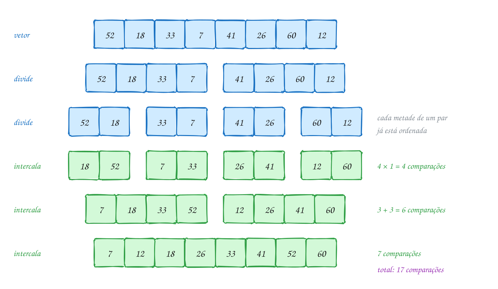
O rascunho w é alocado uma vez no main e serve a todas as
intercalações; a recursão termina a metade esquerda antes da direita (0031):
#include <stdio.h>
#include <stdlib.h>
static int comparacoes = 0;
// junta v[p..q-1] e v[q..r-1], já ordenados, usando w como rascunho
void intercala(int v[], int w[], int p, int q, int r) {
int i = p, j = q, k = 0;
while (i < q && j < r) { // as duas metades ainda têm cartas
comparacoes++;
if (v[i] <= v[j]) { // <= mantém a ordem dos iguais
w[k++] = v[i++];
} else {
w[k++] = v[j++];
}
}
while (i < q) w[k++] = v[i++]; // sobrou só a esquerda
while (j < r) w[k++] = v[j++]; // sobrou só a direita
for (k = 0; k < r - p; k++) {
v[p + k] = w[k]; // devolve para o lugar
}
printf("intercala [%d, %d):", p, r);
for (k = p; k < r; k++) printf(" %d", v[k]);
printf("\n");
}
// ordena v[p..r-1] (intervalo semiaberto)
void merge_sort(int v[], int w[], int p, int r) {
if (r - p < 2) {
return; // 0 ou 1 elemento: já está ordenado
}
int q = p + (r - p) / 2;
merge_sort(v, w, p, q); // ordena a metade esquerda
merge_sort(v, w, q, r); // ordena a metade direita
intercala(v, w, p, q, r); // junta as duas
}
int main(void) {
int notas[] = {52, 18, 33, 7, 41, 26, 60, 12};
int n = 8;
int *w = malloc(n * sizeof *w); // um rascunho só, para todas as intercalações
if (w == NULL) {
return 1;
}
merge_sort(notas, w, 0, n);
printf("%d comparações\n", comparacoes);
free(w);
return 0;
}
// Saída:
// intercala [0, 2): 18 52
// intercala [2, 4): 7 33
// intercala [0, 4): 7 18 33 52
// intercala [4, 6): 26 41
// intercala [6, 8): 12 60
// intercala [4, 8): 12 26 41 60
// intercala [0, 8): 7 12 18 26 33 41 52 60
// 17 comparações
A última intercalação, 7 18 33 52 com 12 26 41 60. i anda na esquerda,
j na direita:
| comparação | v[i] | v[j] | vai para o rascunho | rascunho |
|---|---|---|---|---|
| 1 | 7 | 12 | 7 (esquerda) | 7 |
| 2 | 18 | 12 | 12 (direita) | 7 12 |
| 3 | 18 | 26 | 18 (esquerda) | 7 12 18 |
| 4 | 33 | 26 | 26 (direita) | 7 12 18 26 |
| 5 | 33 | 41 | 33 (esquerda) | ... 26 33 |
| 6 | 52 | 41 | 41 (direita) | ... 33 41 |
| 7 | 52 | 60 | 52 (esquerda) | ... 41 52 |
| (esquerda acabou) | 60 | 60, sem comparar | ... 52 60 |
Sete comparações para 8 elementos, o máximo. Somando os níveis: 4 + 6 + 7 = 17 comparações.
Cada caixa merge_sort repete o fluxograma inteiro para uma metade:
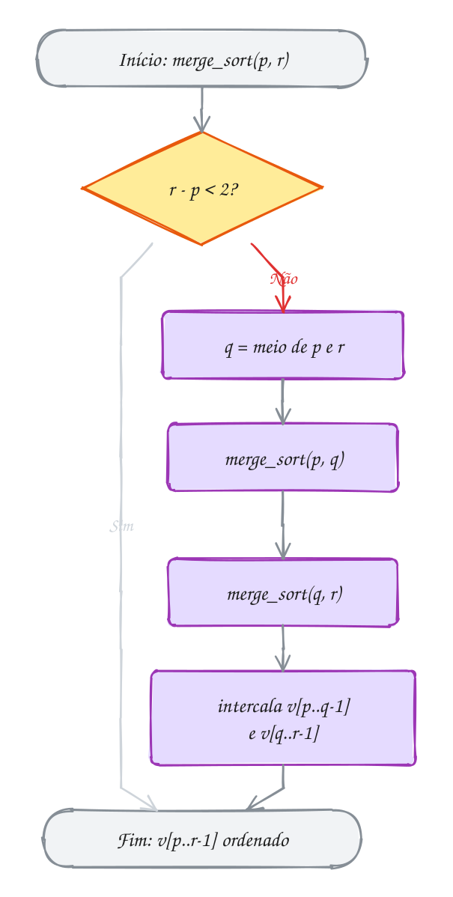
Exemplo A187 · Merge sort sem recursão, de baixo para cima
#include <stdio.h>
#include <stdlib.h>
// junta v[p..q-1] e v[q..r-1], já ordenados, usando w como rascunho
void intercala(int v[], int w[], int p, int q, int r) {
int i = p, j = q, k = 0;
while (i < q && j < r) {
w[k++] = (v[i] <= v[j]) ? v[i++] : v[j++];
}
while (i < q) w[k++] = v[i++];
while (j < r) w[k++] = v[j++];
for (k = 0; k < r - p; k++) {
v[p + k] = w[k];
}
}
void mostra(const int v[], int n) {
for (int i = 0; i < n; i++) printf(" %d", v[i]);
printf("\n");
}
int main(void) {
int tempos[] = {41, 17, 33, 8, 52, 26, 12}; // 7: não é potência de 2
int n = 7;
int *w = malloc(n * sizeof *w);
if (w == NULL) {
return 1;
}
printf("início: ");
mostra(tempos, n);
// blocos de 1 viram blocos de 2, que viram de 4, que viram de 8...
for (int largura = 1; largura < n; largura *= 2) {
for (int p = 0; p < n - largura; p += 2 * largura) {
int q = p + largura;
int r = p + 2 * largura;
if (r > n) {
r = n; // o último bloco pode ser mais curto
}
intercala(tempos, w, p, q, r);
}
printf("blocos de %d:", 2 * largura);
mostra(tempos, n);
}
free(w);
return 0;
}
// Saída (o 12 fica sozinho até a última rodada; 3 rodadas = log2 de 8):
// início: 41 17 33 8 52 26 12
// blocos de 2: 17 41 8 33 26 52 12
// blocos de 4: 8 17 33 41 12 26 52
// blocos de 8: 8 12 17 26 33 41 52
gcc ~/LPEDC/material/A187.c -o ~/LPEDC/material/A187 && ~/LPEDC/material/A187
Exemplo A188 · Os pedidos das duas lojas numa fila só
#include <stdio.h>
// junta a[0..na-1] e b[0..nb-1], já ordenados, em c; devolve as comparações
int intercala(const int a[], int na, const int b[], int nb, int c[]) {
int i = 0, j = 0, k = 0, comparacoes = 0;
while (i < na && j < nb) {
comparacoes++;
if (a[i] <= b[j]) {
c[k++] = a[i++];
} else {
c[k++] = b[j++];
}
}
while (i < na) c[k++] = a[i++]; // uma das duas acabou:
while (j < nb) c[k++] = b[j++]; // o resto da outra vem direto
return comparacoes;
}
int main(void) {
// horários dos pedidos (hhmm), cada loja já em ordem
int loja_a[] = {812, 905, 1047, 1320};
int loja_b[] = {750, 930, 1015, 1100, 1405};
int todos[9];
int c = intercala(loja_a, 4, loja_b, 5, todos);
for (int k = 0; k < 9; k++) {
printf("%s%02d:%02d", k > 0 ? " " : "", todos[k] / 100, todos[k] % 100);
}
printf("\n%d comparações para juntar 9 pedidos\n", c);
return 0;
}
// Saída:
// 07:50 08:12 09:05 09:30 10:15 10:47 11:00 13:20 14:05
// 8 comparações para juntar 9 pedidos
gcc ~/LPEDC/material/A188.c -o ~/LPEDC/material/A188 && ~/LPEDC/material/A188
Exercício E559 · ★☆☆
Duas turmas fizeram a mesma prova e cada professora mandou as notas em ordem: turma A = 45, 60, 75, 90 e turma B = 50, 60, 85, 95, 98. Escreva
int intercala(const int a[], int na, const int b[], int nb, int c[])
que junta as duas listas, em ordem, no vetor c e devolve quantas comparações fez. Mostre o resultado.
Saída esperada:
Notas: 45 50 60 60 75 85 90 95 98
7 comparações
Exercício E561 · ★★☆
A academia tem duas listas de presença, cada uma em ordem de matrícula e sem repetidos dentro dela:
manhã: 1021, 1034, 1050, 1077, 1090
tarde: 1010, 1034, 1066, 1077, 1095, 1102
Monte, numa passada só (estilo intercalação), a lista de alunos DIFERENTES que treinaram no dia, em ordem, e conte quantos foram nos dois turnos.
Saída esperada:
9 alunos diferentes: 1010 1021 1034 1050 1066 1077 1090 1095 1102
foram nos dois turnos: 2
Exercício E562 · ★★☆
A fila de pedidos de uma padaria chegou nesta ordem:
typedef struct { char cliente[8]; int valor; } Pedido;
{"Ana", 50}, {"Bruno", 30}, {"Carla", 50}, {"Davi", 30}, {"Eva", 20}
Ordene por valor com merge sort (adapte o código do assunto para Pedido) e mostre a fila. Quem empatou no valor deve continuar na ordem de chegada (Bruno antes de Davi, Ana antes de Carla). Para ver o papel do <= da intercalação, dê à intercala (e ao merge_sort) um parâmetro bool estavel: verdadeiro compara com <=, falso compara com <. Ordene duas cópias da fila, uma de cada jeito, e mostre as duas.
Saída esperada:
com <=: Eva 20, Bruno 30, Davi 30, Ana 50, Carla 50
com <: Eva 20, Davi 30, Bruno 30, Carla 50, Ana 50
Exercício E564 · ★★★
Ana e Bia ranquearam as mesmas 8 séries. Numerando as séries pela ordem da Bia, o ranking da Ana fica: 3, 1, 7, 2, 8, 4, 6, 5. Quanto mais INVERSÕES (pares fora de ordem) esse vetor tem, mais os gostos discordam. É assim que sites de recomendação medem "pessoas parecidas com você".
Contar inversões com dois laços é O(n²). Faça em O(n log n) pegando carona no merge sort: durante a intercalação, toda vez que um elemento da metade DIREITA sai antes, ele estava invertido com todos os que ainda restam na esquerda. Mostre o resultado do jeito rápido e confira com a força bruta.
Saída esperada:
força bruta: 10 discordâncias
merge sort: 10 discordâncias
de 28 pares possíveis
O merge sort do 0094 garante O(n log n), mas gasta um rascunho do tamanho do vetor. Dá para ter a mesma rapidez, na média, ordenando dentro do próprio vetor? Dá, invertendo onde fica o trabalho. No merge sort, dividir é trivial e juntar dá trabalho. No quick sort, dividir dá trabalho e juntar é de graça.
Black Friday: sete fones custam R$ 35, 12, 48, 7, 29, 51 e 20. Você escolhe o de R$ 20 e faz dois montes: os que custam até 20 de um lado, os mais caros do outro. Sem ordenar nenhum monte, você já sabe uma coisa: o fone de 20 está no lugar certo, porque todo mundo à esquerda dele é mais barato e todo mundo à direita é mais caro. Agora basta ordenar cada monte da mesma forma.
Esse é o quick sort, criado por Tony Hoare em 1960. O elemento escolhido é
o pivô. O método separa o pedaço em menores ou iguais | pivô | maiores e
ordena cada lado com o próprio quick sort, por recursão (CORMEN et al., 2024,
cap. 7). Quando os dois lados voltam ordenados, o pedaço inteiro está
ordenado, sem nenhuma intercalação: é por isso que juntar sai de graça.
O passo de fazer os montes se chama separação, também chamado de
partição. Ele rearranja o pedaço v[p..r] e devolve a posição j em que
o pivô ficou, que é a sua posição final no vetor ordenado. As chamadas
seguintes trabalham em v[p..j-1] e v[j+1..r], e o pivô fica de fora das
duas (FEOFILOFF, 2009). Como os dois montes ficam dentro do próprio vetor, o
quick sort não precisa de rascunho.
Há duas separações clássicas. A de Lomuto, que o Cormen chama de
PARTITION, escolhe o último elemento, v[r], como pivô. Um índice k anda
pelo pedaço, e um índice j marca a fronteira: tudo em v[p..j-1] é menor ou
igual ao pivô. Quando k acha um elemento <= pivô, troca esse elemento com
v[j] e avança j. No fim, troca o pivô com v[j], e ele cai entre os dois
montes (CORMEN et al., 2024, cap. 7). A separação de Hoare usa dois
índices que partem das pontas e andam um na direção do outro, trocando os
pares que estão do lado errado (ZIVIANI, 2010, cap. 4).
O custo depende do pivô. Se ele cai perto do meio, cada separação corta o
pedaço em duas metades, e a conta de níveis do merge sort se repete:
O(n log n). Se ele é sempre o menor ou o maior do pedaço, um monte fica
vazio e o outro com n - 1 elementos, e a soma vira n + (n - 1) + ... + 1:
O(n²). Com o pivô no fim, esse pior caso acontece justamente no vetor
já ordenado, que parece o caso mais fácil. Em dados embaralhados, o custo
médio é O(n log n) (CORMEN et al., 2024, cap. 7). O quick sort não é estável:
as trocas de longa distância da separação podem inverter iguais.
O pior caso traz mais um risco, agora de memória. A recursão desce um nível
por chamada, e no pior caso desce n níveis; cada nível é um quadro na pilha
de chamadas do assunto 0031. Um milhão de quadros estoura a pilha de 8 MB que
o Linux dá a um programa. Há duas defesas. A mediana de três escolhe como
pivô o valor do meio entre o primeiro, o do meio e o último do pedaço, o que
afasta o pior caso dos vetores quase ordenados. E fazer a chamada recursiva só
no lado menor, tratando o maior com um laço, limita a profundidade a
log₂ n níveis (FEOFILOFF, 2009).
[!WARNING] Com
quick_sort(v, p, j), o pivô entra de novo no pedaço da esquerda. Se é o maior (j == r), a chamada recebe o mesmo pedaço e nunca para: estouro de pilha. As chamadas precisam bater com o que a separação promete sobrej.
Black Friday: 7 fones de R$ 35, 12, 48, 7, 29, 51 e 20. O 20 (roxo) é o pivô: separa o vetor e fica verde, no lugar. Cada lado escolhe o seu pivô:
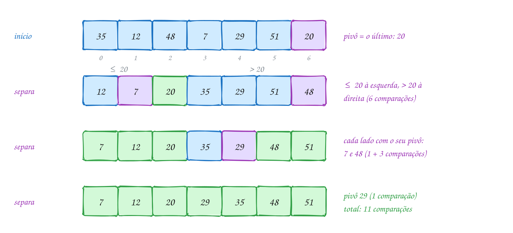
Em C:
#include <stdio.h>
static int comparacoes = 0;
void troca(int *a, int *b) {
int aux = *a;
*a = *b;
*b = aux;
}
// separa v[p..r] em torno do pivô v[r]: menores ou iguais à esquerda,
// maiores à direita. Devolve a posição final do pivô.
int separa(int v[], int p, int r) {
int pivo = v[r];
int j = p; // v[p..j-1] são os <= pivô
for (int k = p; k < r; k++) {
comparacoes++;
if (v[k] <= pivo) {
troca(&v[j], &v[k]);
j++;
}
}
troca(&v[j], &v[r]); // o pivô vai para o meio deles
return j;
}
// ordena v[p..r] (intervalo fechado)
void quick_sort(int v[], int p, int r) {
if (p >= r) {
return; // 0 ou 1 elemento
}
int j = separa(v, p, r);
printf("pivô %d foi para a posição %d:", v[j], j);
for (int i = p; i <= r; i++) printf(" %d", v[i]);
printf("\n");
quick_sort(v, p, j - 1); // o pivô já está no lugar:
quick_sort(v, j + 1, r); // fica fora das duas chamadas
}
int main(void) {
int precos[] = {35, 12, 48, 7, 29, 51, 20};
int n = 7;
quick_sort(precos, 0, n - 1);
printf("resultado:");
for (int i = 0; i < n; i++) printf(" %d", precos[i]);
printf("\n%d comparações\n", comparacoes);
return 0;
}
// Saída:
// pivô 20 foi para a posição 2: 12 7 20 35 29 51 48
// pivô 7 foi para a posição 0: 7 12
// pivô 48 foi para a posição 5: 35 29 48 51
// pivô 29 foi para a posição 3: 29 35
// resultado: 7 12 20 29 35 48 51
// 11 comparações
A primeira separação, com pivô 20. k anda; j marca onde entra o próximo
"pequeno":
| k | v[k] | v[k] <= 20? |
ação | vetor | j |
|---|---|---|---|---|---|
| 35 12 48 7 29 51 20 | 0 | ||||
| 0 | 35 | não | nada | 35 12 48 7 29 51 20 | 0 |
| 1 | 12 | sim | troca v[0] e v[1] | 12 35 48 7 29 51 20 | 1 |
| 2 | 48 | não | nada | 12 35 48 7 29 51 20 | 1 |
| 3 | 7 | sim | troca v[1] e v[3] | 12 7 48 35 29 51 20 | 2 |
| 4 | 29 | não | nada | 12 7 48 35 29 51 20 | 2 |
| 5 | 51 | não | nada | 12 7 48 35 29 51 20 | 2 |
| fim | troca v[2] e o pivô | 12 7 20 35 29 51 48 | 2 |
Seis comparações. Depois vêm [12 7] (1), [35 29 51 48] (3) e [35 29]
(1): 11 comparações.
O pivô fica fora das duas chamadas, e por isso o problema sempre diminui:
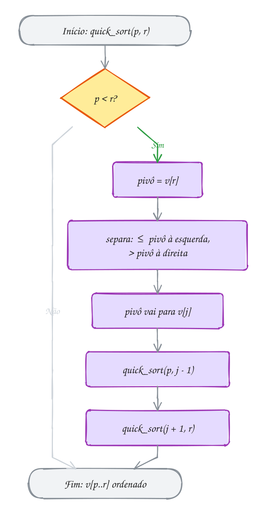
Exemplo A189 · Duas pontas que se encontram: a separação de Hoare
#include <stdio.h>
static int trocas;
void troca(int *a, int *b) {
int aux = *a;
*a = *b;
*b = aux;
trocas++;
}
// Lomuto (a do texto): um índice só, varrendo da esquerda para a direita
int lomuto(int v[], int p, int r) {
int pivo = v[r], j = p;
for (int k = p; k < r; k++) {
if (v[k] <= pivo) {
troca(&v[j], &v[k]);
j++;
}
}
troca(&v[j], &v[r]);
return j;
}
void quick_lomuto(int v[], int p, int r) {
if (p >= r) return;
int j = lomuto(v, p, r);
quick_lomuto(v, p, j - 1);
quick_lomuto(v, j + 1, r);
}
// Hoare: i vem da esquerda, j vem da direita; só troca quem está do lado errado.
// Devolve j tal que v[p..j] <= pivô <= v[j+1..r] (o pivô não fica "no lugar").
int hoare(int v[], int p, int r) {
int pivo = v[p + (r - p) / 2];
int i = p - 1, j = r + 1;
while (1) {
do { i++; } while (v[i] < pivo); // para num que é >= pivô
do { j--; } while (v[j] > pivo); // para num que é <= pivô
if (i >= j) {
return j; // as pontas se cruzaram
}
troca(&v[i], &v[j]);
}
}
void quick_hoare(int v[], int p, int r) {
if (p >= r) return;
int j = hoare(v, p, r);
quick_hoare(v, p, j); // repare: j, e não j - 1
quick_hoare(v, j + 1, r);
}
void mostra(const char *nome, const int v[], int n) {
printf("%-7s %2d trocas:", nome, trocas);
for (int i = 0; i < n; i++) printf(" %d", v[i]);
printf("\n");
}
int main(void) {
// idades na fila da vacinação
int a[] = {67, 23, 81, 45, 30, 72, 18, 55, 39, 60};
int b[] = {67, 23, 81, 45, 30, 72, 18, 55, 39, 60};
int n = 10;
trocas = 0;
quick_lomuto(a, 0, n - 1);
mostra("Lomuto:", a, n);
trocas = 0;
quick_hoare(b, 0, n - 1);
mostra("Hoare:", b, n);
return 0;
}
// O Lomuto conta até as trocas de alguém com ele mesmo; o Hoare só troca
// pares que estão do lado errado.
// Saída:
// Lomuto: 17 trocas: 18 23 30 39 45 55 60 67 72 81
// Hoare: 8 trocas: 18 23 30 39 45 55 60 67 72 81
gcc ~/LPEDC/material/A189.c -o ~/LPEDC/material/A189 && ~/LPEDC/material/A189
Exemplo A190 · O pior caso: vetor que já chega em ordem
#include <stdio.h>
#include <stdbool.h>
static int comparacoes, profundidade, maior_profundidade;
void troca(int *a, int *b) {
int aux = *a;
*a = *b;
*b = aux;
}
int separa(int v[], int p, int r) {
int pivo = v[r], j = p;
for (int k = p; k < r; k++) {
comparacoes++;
if (v[k] <= pivo) {
troca(&v[j], &v[k]);
j++;
}
}
troca(&v[j], &v[r]);
return j;
}
void quick_sort(int v[], int p, int r, bool pivo_do_meio) {
if (p >= r) {
return;
}
profundidade++;
if (profundidade > maior_profundidade) {
maior_profundidade = profundidade;
}
if (pivo_do_meio) {
troca(&v[p + (r - p) / 2], &v[r]); // o do meio vira o pivô
}
int j = separa(v, p, r);
quick_sort(v, p, j - 1, pivo_do_meio);
quick_sort(v, j + 1, r, pivo_do_meio);
profundidade--;
}
void testa(const char *nome, bool pivo_do_meio) {
int v[16];
for (int i = 0; i < 16; i++) {
v[i] = (i + 1) * 5; // 5, 10, ..., 80: já em ordem
}
comparacoes = profundidade = maior_profundidade = 0;
quick_sort(v, 0, 15, pivo_do_meio);
printf("%-14s %3d comparações, recursão com %2d níveis\n",
nome, comparacoes, maior_profundidade);
}
int main(void) {
testa("pivô no fim:", false);
testa("pivô do meio:", true);
return 0;
}
// Saída:
// pivô no fim: 120 comparações, recursão com 15 níveis
// pivô do meio: 38 comparações, recursão com 4 níveis
gcc ~/LPEDC/material/A190.c -o ~/LPEDC/material/A190 && ~/LPEDC/material/A190
Exercício E565 · ★☆☆
As senhas de uma fila de exames são 9, 2, 6, 4, 8, 5. Escreva int separa(int v[], int p, int r), a separação com o pivô no fim (v[r]), que imprime "troca v[a] e v[b]" a cada troca, conta as comparações (v[k] <= pivo) numa variável static e devolve a posição final do pivô. No main, separe o vetor inteiro, mostre o vetor e a posição do pivô; depois separe só o lado DIREITO do pivô, mostre de novo e, no fim, o total de comparações.
Saída esperada:
troca v[0] e v[1]
troca v[1] e v[3]
troca v[2] e v[5]
vetor: 2 4 5 9 8 6
pivô na posição 2
troca v[3] e v[5]
vetor: 2 4 5 6 8 9
pivô na posição 3
comparações: 7
Exercício E567 · ★★☆
Ordene a lista do mercado em ordem alfabética com quick sort (pivô no fim, separação de Lomuto, como no texto do assunto), trocando só os ponteiros:
const char *compras[] = {"leite", "arroz", "tomate", "café", "pão",
"banana", "ovos", "feijão"};
Conte as comparações de strings.
Saída esperada:
arroz, banana, café, feijão, leite, ovos, pão, tomate
14 comparações
Exercício E568 · ★★☆
Os andares das entregas do prédio são 4, 9, 2, 7, 5 e 1. Escreva void quick_sort(int v[], int n, int p, int r), recursivo, com separação de Lomuto (pivô em v[r]). A cada separação, imprima o intervalo, a posição final do pivô e o vetor. Chame as duas metades SEM o pivô (j - 1 e j + 1).
Saída esperada:
separa [0..5]: pivô na posição 0 -> 1 9 2 7 5 4
separa [1..5]: pivô na posição 2 -> 1 2 4 7 5 9
separa [3..5]: pivô na posição 5 -> 1 2 4 7 5 9
separa [3..4]: pivô na posição 3 -> 1 2 4 5 7 9
Final: 1 2 4 5 7 9
Exercício E569 · ★★★
Os 11 corredores do grupo fizeram 5 km em 45, 22, 38, 31, 50, 27, 24, 41, 29, 35 e 33 minutos. Qual o tempo MEDIANO (o do meio, se a lista estivesse ordenada)? Não precisa ordenar tudo: depois de um separa, o pivô está na posição final j. Se j é a posição que você quer (k = n / 2), acabou. Se k < j, a resposta está só no lado esquerdo; se k > j, só no direito. Isso é o QUICKSELECT.
Escreva int quickselect(int v[], int n, int k), sem recursão (um while que encolhe [p, r]), e compare as comparações com um quick sort completo numa cópia do vetor.
Saída esperada:
mediana: 33 min (quickselect: 10 comparações)
ordenando tudo: 33 min (23 comparações)
A planilha de pedidos vem em ordem de horário, e a logística pede: "agrupa por cidade, mas mantém a ordem de chegada dentro de cada cidade". Você já conhece seis métodos de ordenação. Qual deles serve? E, num programa de verdade, precisa escrever algum? Este assunto compara os métodos pelos critérios que decidem a escolha e apresenta a ordenação que o C já traz pronta.
O pedido da logística depende de estabilidade, que o 0092 apresentou: um
método é estável quando elementos com chave igual saem na mesma ordem
relativa em que entraram (FEOFILOFF, 2009). Se três pedidos de Recife chegaram
como R1, R3 e R6, um método estável que ordena por cidade devolve R1, R3, R6.
Um instável pode devolver R3, R1, R6. Num vetor de int isso não faz
diferença, porque dois 7 são indistinguíveis. Num vetor de struct, em que a
chave é só um dos campos, faz toda a diferença: os outros campos revelam a
troca.
Além da estabilidade, três critérios pesam (ZIVIANI, 2010, cap. 4). O primeiro é o custo no melhor, no médio e no pior caso; o pior caso importa porque é ele que trava um sistema no dia em que a entrada vem ruim. O segundo é a memória extra: um método in-place usa só O(1) além do vetor, enquanto o merge sort precisa de um rascunho O(n). O terceiro é ser adaptativo, isto é, ficar mais rápido quando o vetor já está quase em ordem, como o insertion sort e o bubble sort com bandeira. A tabela reúne o módulo inteiro, e o heapsort, que entra no assunto 0103:
| Algoritmo | Melhor | Médio | Pior | Memória extra | Estável |
|---|---|---|---|---|---|
| bubble (com bandeira) | O(n) | O(n²) | O(n²) | O(1) | sim |
| selection | O(n²) | O(n²) | O(n²) | O(1) | não |
| insertion | O(n) | O(n²) | O(n²) | O(1) | sim |
| merge | O(n log n) | O(n log n) | O(n log n) | O(n) | sim |
| quick | O(n log n) | O(n log n) | O(n²) | O(log n) a O(n) de pilha | não |
| heap (assunto 0103) | O(n log n) | O(n log n) | O(n log n) | O(1) | não |
A tabela mostra que não existe um método melhor que todos. O insertion sort ganha em vetores pequenos ou quase ordenados. O merge sort garante O(n log n) e estabilidade, pagando com memória. O quick sort é o mais rápido na média, mas tem pior caso O(n²) e não é estável. O selection sort faz o mínimo de trocas, o que ajuda quando mover um elemento é caro (FEOFILOFF, 2009). Para a logística, servem o insertion e o merge, que são estáveis.
Num programa real, você não escreve a ordenação: usa a qsort, da
stdlib.h. Ela ordena um vetor de qualquer tipo, e o truque para isso é o
ponteiro para função do assunto 0050 (KERNIGHAN; RITCHIE, 1989):
void qsort(void *base, size_t n, size_t tamanho,
int (*compara)(const void *, const void *));
A qsort não sabe o tipo dos elementos. Por isso recebe o vetor como
void *, o endereço cru do primeiro byte, junto com o número de elementos e o
tamanho de cada um em bytes: com esses dados ela sabe onde começa cada
elemento e consegue copiá-los. O que ela não sabe é qual vem antes, e isso
você ensina com a função de comparação. Ela recebe os endereços de dois
elementos e devolve um número negativo se o primeiro deve vir antes,
zero se os dois empatam e positivo se o primeiro deve vir depois, a
mesma convenção do strcmp (CPPREFERENCE, s.d.).
A norma do C não diz qual algoritmo a qsort usa, e por isso não promete
estabilidade. Se a ordem dos empatados importa, ponha o desempate dentro da
própria função de comparação: compare a cidade e, se empatar, compare o
horário. Essa é uma chave composta (0180) (LINUX MAN-PAGES, s.d.). Para
buscar num vetor ordenado pela mesma função, a stdlib.h traz a bsearch,
uma busca binária genérica que recebe a mesma função de comparação (CELES;
RANGEL, 2002).
[!WARNING]
return *(const int *) a - *(const int *) b;passa nos testes pequenos, mas com sinais opostos e valores grandes (INT_MAXe-5) a subtração dá overflow. Escrevareturn (x > y) - (x < y);.
A planilha de pedidos vem em ordem de horário, e a logística quer agrupar por cidade mantendo a ordem de chegada. Um algoritmo estável mantém R1, R3, R6; o selection, com trocas de longa distância, entrega R3 antes de R1:
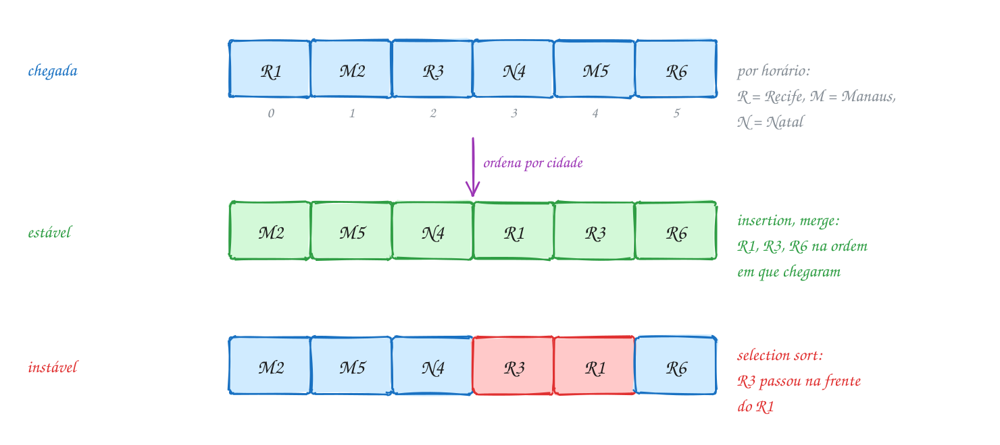
O desempate pelo horário vai na compara, e o qsort resolve:
#include <stdio.h>
#include <stdlib.h>
#include <string.h>
typedef struct {
int numero;
int hora; // hhmm
char cidade[16];
} Pedido;
// contrato do qsort: negativo se a vem antes, 0 se empata, positivo se depois
int compara(const void *a, const void *b) {
const Pedido *p = a;
const Pedido *q = b;
int c = strcmp(p->cidade, q->cidade); // 1º critério: cidade
if (c != 0) {
return c;
}
return (p->hora > q->hora) - (p->hora < q->hora); // desempate: horário
}
int main(void) {
Pedido pedidos[] = { // chegaram nesta ordem (por horário)
{101, 910, "Recife"},
{102, 925, "Manaus"},
{103, 1005, "Recife"},
{104, 1040, "Natal"},
{105, 1115, "Manaus"},
{106, 1150, "Recife"},
};
size_t n = sizeof pedidos / sizeof pedidos[0];
qsort(pedidos, n, sizeof pedidos[0], compara);
for (size_t i = 0; i < n; i++) {
printf("%-7s %02d:%02d #%d\n", pedidos[i].cidade,
pedidos[i].hora / 100, pedidos[i].hora % 100, pedidos[i].numero);
}
return 0;
}
// Saída:
// Manaus 09:25 #102
// Manaus 11:15 #105
// Natal 10:40 #104
// Recife 09:10 #101
// Recife 10:05 #103
// Recife 11:50 #106
O exemplo A192 roda os cinco algoritmos com 1000 números:
| n = 1000 | aleatório | ordenado | invertido |
|---|---|---|---|
| bubble | 499.122 | 999 | 499.500 |
| selection | 499.500 | 499.500 | 499.500 |
| insertion | 241.308 | 999 | 499.500 |
| merge | 8.696 | 4.932 | 5.044 |
| quick (pivô no fim) | 10.972 | 499.500 | 499.500 |
No aleatório, os O(n log n) fazem umas 50 vezes menos trabalho. No ordenado, bubble e insertion fazem uma passada e o quick com pivô no fim cai no pior caso.
A ordem de chegada cabe como desempate na compara, então o caminho termina
no qsort:
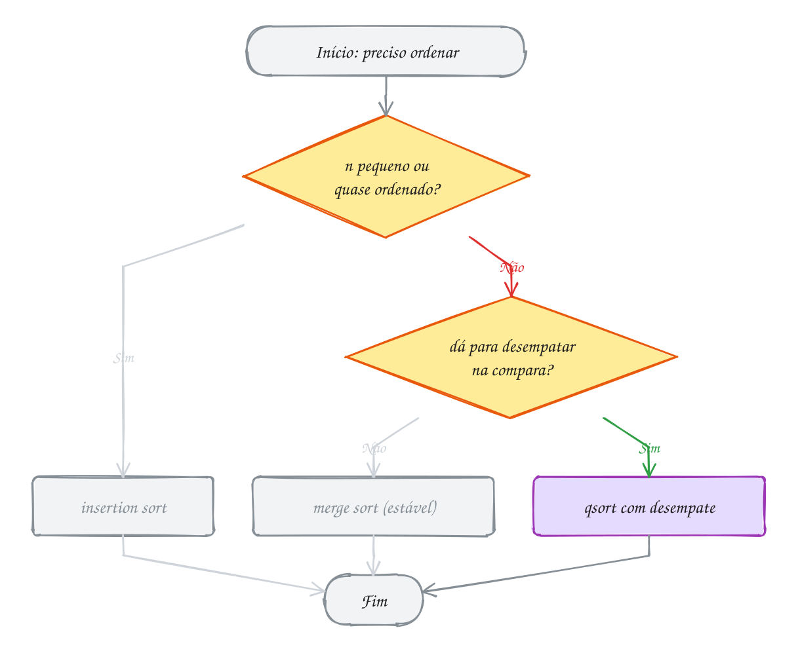
Exemplo A191 · Duas vitrines do mesmo cardápio com qsort
#include <stdio.h>
#include <stdlib.h>
#include <string.h>
typedef struct {
char nome[16];
double preco;
int calorias;
} Prato;
// o vetor ordenado é de Prato *: o qsort entrega o ENDEREÇO de cada ponteiro
int por_preco(const void *a, const void *b) {
const Prato *p = *(const Prato *const *) a;
const Prato *q = *(const Prato *const *) b;
return (p->preco > q->preco) - (p->preco < q->preco);
}
int por_calorias_desc(const void *a, const void *b) {
const Prato *p = *(const Prato *const *) a;
const Prato *q = *(const Prato *const *) b;
if (p->calorias != q->calorias) {
return (p->calorias < q->calorias) - (p->calorias > q->calorias);
}
return strcmp(p->nome, q->nome); // desempate: nome
}
void mostra(const char *titulo, Prato *const v[], size_t n) {
printf("%s\n", titulo);
for (size_t i = 0; i < n; i++) {
printf(" %-10s R$ %5.2f %4d kcal\n", v[i]->nome, v[i]->preco, v[i]->calorias);
}
}
int main(void) {
Prato cardapio[] = {
{"Coxinha", 7.50, 290}, {"Pastel", 9.00, 340}, {"Tapioca", 12.00, 250},
{"Esfiha", 6.50, 250}, {"Cuscuz", 15.00, 480},
};
size_t n = sizeof cardapio / sizeof cardapio[0];
Prato *vitrine1[5], *vitrine2[5];
for (size_t i = 0; i < n; i++) {
vitrine1[i] = vitrine2[i] = &cardapio[i]; // só endereços, nada copiado
}
qsort(vitrine1, n, sizeof vitrine1[0], por_preco);
qsort(vitrine2, n, sizeof vitrine2[0], por_calorias_desc);
mostra("Mais barato primeiro:", vitrine1, n);
mostra("Mais calórico primeiro:", vitrine2, n);
printf("cardapio[0] continua: %s (cada ponteiro tem %zu bytes, cada Prato %zu)\n",
cardapio[0].nome, sizeof vitrine1[0], sizeof cardapio[0]);
return 0;
}
// Saída (8 e 32 bytes numa máquina de 64 bits comum):
// Mais barato primeiro:
// Esfiha R$ 6.50 250 kcal
// Coxinha R$ 7.50 290 kcal
// Pastel R$ 9.00 340 kcal
// Tapioca R$ 12.00 250 kcal
// Cuscuz R$ 15.00 480 kcal
// Mais calórico primeiro:
// Cuscuz R$ 15.00 480 kcal
// Pastel R$ 9.00 340 kcal
// Coxinha R$ 7.50 290 kcal
// Esfiha R$ 6.50 250 kcal
// Tapioca R$ 12.00 250 kcal
// cardapio[0] continua: Coxinha (cada ponteiro tem 8 bytes, cada Prato 32)
gcc ~/LPEDC/material/A191.c -o ~/LPEDC/material/A191 && ~/LPEDC/material/A191
Exemplo A192 · Cinco algoritmos, a mesma corrida
#include <stdio.h>
#include <stdlib.h>
#include <string.h>
#define N 1000
static long comparacoes;
// toda comparação de elementos passa por aqui e é contada
static int maior(int a, int b) {
comparacoes++;
return a > b;
}
static void troca(int *a, int *b) {
int aux = *a;
*a = *b;
*b = aux;
}
static void bubble(int v[], int n) {
int trocou = 1;
for (int p = 1; p < n && trocou; p++) {
trocou = 0;
for (int j = 0; j < n - p; j++) {
if (maior(v[j], v[j + 1])) {
troca(&v[j], &v[j + 1]);
trocou = 1;
}
}
}
}
static void selection(int v[], int n) {
for (int i = 0; i < n - 1; i++) {
int m = i;
for (int j = i + 1; j < n; j++) {
if (maior(v[m], v[j])) {
m = j;
}
}
troca(&v[i], &v[m]);
}
}
static void insertion(int v[], int n) {
for (int j = 1; j < n; j++) {
int x = v[j], i = j - 1;
while (i >= 0 && maior(v[i], x)) {
v[i + 1] = v[i];
i--;
}
v[i + 1] = x;
}
}
static void merge_rec(int v[], int w[], int p, int r) {
if (r - p < 2) {
return;
}
int q = p + (r - p) / 2;
merge_rec(v, w, p, q);
merge_rec(v, w, q, r);
int i = p, j = q, k = 0;
while (i < q && j < r) {
w[k++] = maior(v[i], v[j]) ? v[j++] : v[i++];
}
while (i < q) w[k++] = v[i++];
while (j < r) w[k++] = v[j++];
memcpy(&v[p], w, (size_t) (r - p) * sizeof v[0]);
}
static void merge(int v[], int n) {
int *w = malloc((size_t) n * sizeof *w);
if (w == NULL) {
return;
}
merge_rec(v, w, 0, n);
free(w);
}
static void quick_rec(int v[], int p, int r) {
if (p >= r) {
return;
}
int j = p;
for (int k = p; k < r; k++) {
if (!maior(v[k], v[r])) { // v[k] <= pivô
troca(&v[j], &v[k]);
j++;
}
}
troca(&v[j], &v[r]);
quick_rec(v, p, j - 1);
quick_rec(v, j + 1, r);
}
static void quick(int v[], int n) {
quick_rec(v, 0, n - 1);
}
// gerador de números próprio: dá a mesma sequência em qualquer máquina
static unsigned semente = 2024;
static int sorteia(void) {
semente = semente * 1103515245u + 12345u;
return (int) ((semente >> 16) % 10000);
}
int main(void) {
static int base[3][N], v[N];
for (int i = 0; i < N; i++) {
base[0][i] = sorteia(); // aleatório
base[1][i] = i; // já ordenado
base[2][i] = N - i; // invertido
}
const char *nomes[] = {"bubble", "selection", "insertion", "merge", "quick"};
void (*algoritmos[])(int[], int) = {bubble, selection, insertion, merge, quick};
printf("n = 1000 aleatório ordenado invertido\n"); // alinhado à mão: o "ó" ocupa 2 bytes
for (int a = 0; a < 5; a++) {
printf("%-10s", nomes[a]);
for (int c = 0; c < 3; c++) {
memcpy(v, base[c], sizeof v);
comparacoes = 0;
algoritmos[a](v, N);
printf(" %10ld", comparacoes);
}
printf("\n");
}
return 0;
}
// Saída:
// n = 1000 aleatório ordenado invertido
// bubble 499122 999 499500
// selection 499500 499500 499500
// insertion 241308 999 499500
// merge 8696 4932 5044
// quick 10972 499500 499500
gcc ~/LPEDC/material/A192.c -o ~/LPEDC/material/A192 && ~/LPEDC/material/A192
Exercício E571 · ★☆☆
O app de combustível mostra o preço da gasolina em seis postos: 5.89, 6.19, 5.79, 6.05, 5.99 e 6.29. Ordene do MAIS CARO para o mais barato com qsort e mostre um preço por linha.
Saída esperada:
R$ 6.29
R$ 6.19
R$ 6.05
R$ 5.99
R$ 5.89
R$ 5.79
Exercício E573 · ★★☆
A playlist tem as bandas const char *bandas[] = {"Skank", "Titas", "Legiao", "Raimundos", "Pitty", "Cazuza"} (sem acentos, para o strcmp não se perder). Ordene com qsort duas vezes e mostre cada resultado numa linha:
1) em ordem alfabética;
2) do nome mais curto para o mais comprido; empatou no tamanho, ordem
alfabética.
Saída esperada:
Cazuza Legiao Pitty Raimundos Skank Titas
Pitty Skank Titas Cazuza Legiao Raimundos
Exercício E574 · ★★☆
Os saldos (em centavos) de cinco contas de uma corretora são 2000000000, -1500000000, 15, -7 e 1000000000. Ordene do menor para o maior com qsort e escreva a função de comparação SEM subtração (x - y estoura o int quando os sinais são opostos). Mostre um saldo por linha.
Saída esperada:
-1500000000
-7
15
1000000000
2000000000
Exercício E575 · ★★★
Uma agenda de contatos:
typedef struct { char nome[16]; char telefone[16]; } Contato;
{"Rafael", "81 99876-1234"}, {"Carla", "11 98765-4321"},
{"Bruno", "21 97654-3210"}, {"Marina", "31 96543-2109"},
{"Diego", "85 95432-1098"}
Ordene por nome com qsort e depois procure "Carla" e "Zeca" com bsearch:
void *bsearch(const void *chave, const void *base, size_t n,
size_t tamanho, int (*compara)(const void *, const void *));
Ela devolve o endereço do elemento achado ou NULL. Passe como chave a própria string (const char *), sem montar um Contato.
Saída esperada:
Carla: 11 98765-4321 (posição 1)
Zeca: não está na agenda
30 exercícios que misturam os assuntos do módulo, no ritmo da prova. Arquivos P1301.c a P1330.c, em material/; resoluções em _respostas/13-busca-e-ordenacao/lista/.
Exercício P1301 · ★☆☆ · A placa no estacionamento, com sentinela
A cancela do estacionamento guarda os números das placas que estão lá dentro, sem ordem: 4821, 1307, 9954, 2210, 6638, 7012, 3389, 5146.
Escreva int busca_sentinela(int v[], int n, int x, int *comparacoes): ela copia x para v[n] (a sentinela) e anda com um while que só testa v[i] != x, sem testar i < n. No fim, devolve i se i < n, ou -1. Conte uma comparação para cada v[i] olhado, inclusive o da sentinela. O vetor tem que ter uma posição a mais (9 posições) para caber a sentinela.
Procure 2210, 5146 e 1000.
Saída esperada:
Placa 2210: posição 3 (4 comparações)
Placa 5146: posição 7 (8 comparações)
Placa 1000: posição -1 (9 comparações)
Exercício P1302 · ★☆☆ · Quantas voltas a busca binária dá
A tabela de preços da papelaria (em reais, em ordem crescente) tem 15 itens. Complete a busca binária (intervalo fechado [ini, fim]) para que ela conte em *voltas quantas vezes o while rodou, e mostre o resultado para os preços 33, 28, 3, 89 e 50.
Saída esperada:
R$ 33: posição 7 (voltas: 1)
R$ 28: posição 6 (voltas: 4)
R$ 3: posição 0 (voltas: 4)
R$ 89: posição 14 (voltas: 4)
R$ 50: posição -1 (voltas: 4)
Exercício P1303 · ★☆☆ · O bubble passada a passada
Os gols das 6 rodadas do time do bairro foram 3, 0, 5, 1, 4, 2. Escreva um bubble sort crescente que mostre o vetor depois de CADA passada e pare assim que uma passada inteira não fizer nenhuma troca (avisando com "nenhuma troca: parou"). Na passada p, o laço interno vai de j = 0 até j < n - p, comparando v[j] com v[j + 1].
Saída esperada:
passada 1: 0 3 1 4 2 5
passada 2: 0 1 3 2 4 5
passada 3: 0 1 2 3 4 5
passada 4: 0 1 2 3 4 5
nenhuma troca: parou
Exercício P1304 · ★☆☆ · Selection sort das senhas da farmácia
As senhas da fila da farmácia estão bagunçadas: 27, 12, 44, 8, 31, 19. Complete o selection sort: em cada passada i, ache o menor de senhas[i..n-1] e troque com senhas[i], mas SÓ troque se o menor não estiver já em i. Mostre o vetor depois de cada passada e, no fim, quantas trocas aconteceram de verdade.
Saída esperada:
passada 1: 8 12 44 27 31 19
passada 2: 8 12 44 27 31 19
passada 3: 8 12 19 27 31 44
passada 4: 8 12 19 27 31 44
passada 5: 8 12 19 27 31 44
trocas: 2
Exercício P1305 · ★☆☆ · Insertion sort das encomendas
A transportadora carrega as encomendas da mais leve para a mais pesada. Os pesos, em kg, chegaram nesta ordem: 14, 9, 22, 5, 17, 9. Escreva um insertion sort que mostre o vetor depois de encaixar cada elemento (j = 1 até j = 5). Use pesos[i] > x no while, para o algoritmo ser estável.
Saída esperada:
j = 1: 9 14 22 5 17 9
j = 2: 9 14 22 5 17 9
j = 3: 5 9 14 22 17 9
j = 4: 5 9 14 17 22 9
j = 5: 5 9 9 14 17 22
Exercício P1306 · ★☆☆ · Intercalando as filas de embarque
No aeroporto, os passageiros dos portões A e B chegam já em ordem de assento: A tem 4, 11, 18, 25, 30 e B tem 2, 9, 13. Complete a função intercala, que junta as duas filas numa só, em ordem, e devolve quantas comparações a[i] <= b[j] ela fez.
Saída esperada:
fila: 2 4 9 11 13 18 25 30
comparações: 5
Exercício P1307 · ★☆☆ · Uma partição de Lomuto
O entregador do prédio tem os andares 12, 3, 17, 8, 21, 5, 10. Escreva a partição de Lomuto (a PARTITION do Cormen): o pivô é o ÚLTIMO elemento, i começa em p - 1, j vai de p a r - 1 e, quando v[j] <= pivô, i avança e v[i] troca com v[j]. No fim, o pivô troca com v[i + 1], que é a posição devolvida. Faça UMA partição do vetor inteiro e mostre o resultado.
Saída esperada:
depois da partição: 3 8 5 10 21 17 12
pivô 10 na posição 3
Exercício P1308 · ★☆☆ · As capitais mais quentes primeiro
As máximas do dia em sete capitais foram 34, 29, 38, 22, 31, 36 e 27 graus. O programa abaixo já ordena em ordem crescente com qsort. Estenda: escreva a função decrescente (use a crescente, trocando a ordem dos argumentos), ordene de novo do maior para o menor e mostre as 3 mais quentes.
Saída esperada:
crescente: 22 27 29 31 34 36 38
decrescente: 38 36 34 31 29 27 22
as 3 mais quentes: 38 36 34
Exercício P1309 · ★☆☆ · A busca binária que esquece a ponta
A secretaria procura matrículas num vetor ordenado com a busca binária abaixo, que tem um erro de propósito: ela não acha algumas matrículas que estão lá. Rode, veja quais falham e conserte (é uma mudança pequena).
Saída esperada (depois do conserto):
10: 0
47: 3
98: 7
60: -1
Resposta esperada: a condição do while deve ser ini <= fim; aí a saída fica igual à de cima.
Exercício P1310 · ★☆☆ · Todas as vezes que o ônibus passou
O fiscal anotou as linhas de ônibus que passaram no ponto, na ordem: 302, 115, 302, 640, 115, 302, 88, 640, 302, 115.
Escreva int todas(const int v[], int n, int x, int pos[]), que guarda em pos[] TODAS as posições onde x aparece e devolve quantas são. No main, consulte as linhas 302, 640 e 500.
Saída esperada:
linha 302: 4 vez(es), posições 0 2 5 8
linha 640: 2 vez(es), posições 3 7
linha 500: 0 vez(es)
Exercício P1311 · ★★☆ · O primeiro boleto do dia
O app do banco guarda os dias de vencimento dos boletos do mês, em ordem crescente e com repetidos:
2, 3, 5, 5, 5, 5, 9, 10, 12, 12, 12, 15, 18, 20, 20, 25
Ele quer a PRIMEIRA posição de um dia (o primeiro boleto daquele dia). Escreva duas funções que devolvem essa posição (ou -1) e contam em *comp quantas vezes compararam o vetor:
int primeira_binaria(const int v[], int n, int x, int *comp)
int primeira_sequencial(const int v[], int n, int x, int *comp)
A binária não pode parar quando acha: ela guarda a posição e continua procurando na metade da esquerda. Conte 1 comparação por volta do while (na binária) e 1 por posição olhada (na sequencial). Teste os dias 5, 12, 20 e 7.
Saída esperada:
dia 5: binária 2 (4 comp.), sequencial 2 (3 comp.)
dia 12: binária 8 (4 comp.), sequencial 8 (9 comp.)
dia 20: binária 13 (4 comp.), sequencial 13 (14 comp.)
dia 7: binária -1 (4 comp.), sequencial -1 (16 comp.)
Exercício P1312 · ★★☆ · Encaixando consultas na agenda
A agenda da clínica guarda os horários marcados em minutos desde a meia-noite (480 é 8h00), em ordem crescente: 480, 540, 600, 660, 780, 840. Chegam novos pedidos de horário: 615, 450, 900 e 600 (este já existe; o novo entra ANTES do antigo).
Escreva:
int ponto_insercao(const int v[], int n, int x)
busca binária que devolve a primeira posição com v[i] >= x (de 0 a n)
int insere(int v[], int *n, int x)
acha o ponto de inserção, desloca o resto uma casa para a direita,
grava x, aumenta *n e devolve a posição
Mostre a agenda depois de cada inserção (o vetor tem capacidade 10).
Saída esperada:
615 entrou na posição 3: 480 540 600 615 660 780 840
450 entrou na posição 0: 450 480 540 600 615 660 780 840
900 entrou na posição 8: 450 480 540 600 615 660 780 840 900
600 entrou na posição 3: 450 480 540 600 600 615 660 780 840 900
Exercício P1313 · ★★☆ · O bubble no melhor e no pior dia
Instrumente o bubble sort com parada antecipada (para quando uma passada não troca nada): escreva
void bubble(int v[], int n, int *comp, int *trocas, int *passadas)
que ordena v e devolve quantas comparações v[j] > v[j + 1] fez, quantas trocas e quantas passadas rodou. Teste com três vetores de 6 senhas: crescente 1 2 3 4 5 6, invertido 6 5 4 3 2 1 e misturado 4 1 6 2 5 3. Mostre cada linha com printf("%-10s passadas %d, comparações %2d, trocas %2d\n", ...).
Saída esperada:
crescente passadas 1, comparações 5, trocas 0
invertido passadas 5, comparações 15, trocas 15
misturado passadas 4, comparações 14, trocas 7
Exercício P1314 · ★★☆ · Quick sort com a partição de Hoare
Ordene as notas 7, 2, 9, 4, 7, 1, 8, 3 com quick sort usando a partição de HOARE do Cormen (problema 7-1): o pivô é x = v[p]; i começa em p - 1 e j em r + 1; repita: "j-- até v[j] <= x", "i++ até v[i] >= x"; se i < j, troca v[i] com v[j]; senão, devolve j. Depois, a recursão é quick(p, j) e quick(j + 1, r): o pivô NÃO fica necessariamente na posição j.
O vetor e n são globais (já estão no esqueleto). A cada partição, mostre o intervalo, o pivô, o j devolvido e o vetor inteiro; no fim, o vetor ordenado.
Saída esperada:
[0..7] pivô 7, j = 4: 3 2 1 4 7 9 8 7
[0..4] pivô 3, j = 1: 1 2 3 4 7 9 8 7
[0..1] pivô 1, j = 0: 1 2 3 4 7 9 8 7
[2..4] pivô 3, j = 2: 1 2 3 4 7 9 8 7
[3..4] pivô 4, j = 3: 1 2 3 4 7 9 8 7
[5..7] pivô 9, j = 6: 1 2 3 4 7 7 8 9
[5..6] pivô 7, j = 5: 1 2 3 4 7 7 8 9
final: 1 2 3 4 7 7 8 9
Exercício P1315 · ★★☆ · Quem ordena sem bagunçar os empates
A lista da escola está em ordem alfabética: Ana (turma 2), Beto (1), Caio (2), Duda (1), Eva (3), Fabio (2). A secretaria quer por turma, mantendo a ordem alfabética dentro de cada turma, ou seja, uma ordenação ESTÁVEL.
Escreva selection(Aluno v[], int n) e insertion(Aluno v[], int n), as duas ordenando pelo campo turma (o selection troca o menor com v[i]; o insertion usa > no while). Ordene duas cópias da lista e mostre as duas.
typedef struct { char nome[10]; int turma; } Aluno;
Saída esperada:
selection: Beto(1) Duda(1) Caio(2) Ana(2) Fabio(2) Eva(3)
insertion: Beto(1) Duda(1) Ana(2) Caio(2) Fabio(2) Eva(3)
Exercício P1316 · ★★☆ · Classificação do concurso com desempate
O edital do concurso da prefeitura diz: classifica primeiro quem tem a maior nota; no empate, o candidato mais velho; persistindo, a ordem alfabética do nome. Escreva a função compara para o qsort com essa chave composta e mostre a classificação.
Candidatos: Paulo 82 (30 anos), Rita 90 (25), Lucas 82 (41), Ana 82 (30),
Bruna 75 (52), Igor 90 (25), Celia 82 (41)
Saída esperada:
1º Igor nota 90, 25 anos
2º Rita nota 90, 25 anos
3º Celia nota 82, 41 anos
4º Lucas nota 82, 41 anos
5º Ana nota 82, 30 anos
6º Paulo nota 82, 30 anos
7º Bruna nota 75, 52 anos
Exercício P1317 · ★★☆ · O merge sort mostrando cada intercalação
Ordene os tempos de espera 38, 27, 43, 3, 9, 82, 10 (em minutos) com merge sort, dividindo em q = (p + r) / 2. Instrumente a intercalação: no fim de cada intercala(p, q, r), mostre o trecho v[p..r] já intercalado. Use um vetor auxiliar global int aux[7].
Saída esperada:
intercala [0..1]: 27 38
intercala [2..3]: 3 43
intercala [0..3]: 3 27 38 43
intercala [4..5]: 9 82
intercala [4..6]: 9 10 82
intercala [0..6]: 3 9 10 27 38 43 82
Exercício P1318 · ★★☆ · O pior caso do quick sort, medido
O quick sort abaixo usa a partição de Lomuto (pivô no fim). Instrumente:
a) conte numa variável global comparacoes cada v[j] <= pivo; b) acrescente um parâmetro prof em quick (a raiz chama com 0 e cada
chamada recursiva passa prof + 1) e guarde em profundidade_max a maior
profundidade alcançada, contando também as chamadas com p >= r;
c) escreva testa(nome, v, n), que zera os contadores, ordena e mostra.
Rode no vetor crescente 1..10 e no misturado 6 3 9 1 8 2 10 5 7 4, e mostre n(n-1)/2 para comparar.
Saída esperada:
crescente comparações 45, profundidade 9
misturado comparações 20, profundidade 4
n(n-1)/2 = 45
Exercício P1319 · ★★☆ · Busca binária no ranking decrescente
O ranking do torneio de xadrez da escola está em ordem DECRESCENTE de pontos: 980, 875, 870, 720, 650, 610, 455, 300. A busca abaixo foi copiada de um vetor crescente e, aqui, erra quase tudo. Adapte a busca para vetor decrescente e mostre a colocação (posição + 1) de quem fez 650, 980, 300 e 500 pontos.
Saída esperada:
650 pontos: 5º lugar
980 pontos: 1º lugar
300 pontos: 8º lugar
500 pontos: ninguém
Exercício P1320 · ★★☆ · Um selection sort estável
Na lotérica, a fila foi anotada em ordem de chegada com a prioridade de cada cliente (1 = mais urgente): A3, B2, C3, D1, E2, F1. O selection sort abaixo ordena por prioridade, mas embaralha a ordem de chegada entre empatados (o E passa na frente do B).
Escreva selection_estavel: ache o menor de v[i..n-1] como antes, mas em vez de TROCAR, guarde o menor, empurre v[i..menor-1] uma casa para a direita e grave o menor em v[i]. Ordene uma cópia com cada versão e mostre as duas.
Saída esperada:
com troca : D1 F1 E2 B2 C3 A3
deslocando : D1 F1 B2 E2 A3 C3
Exercício P1321 · ★★★ · As quedas de mais da metade
O preço de uma ação, em reais, nos últimos 8 pregões foi 40, 15, 22, 90, 10, 35, 8, 50. O analista chama de "queda forte" todo par de dias i < j em que o preço do dia i é MAIS QUE O DOBRO do preço do dia j (v[i] > 2 * v[j]). Quantas quedas fortes houve?
Escreva duas versões:
long long forca_bruta(const int v[], int n) O(n²)
long long conta(int v[], int aux[], int p, int r) O(n log n), merge sort
Na versão rápida, depois de ordenar as duas metades e ANTES de intercalar, conte os pares (i na esquerda, j na direita) com v[i] > 2 * v[j]. Como as duas metades estão ordenadas, o índice j só anda para a frente: um laço em i com um while em j, os dois juntos em O(n). Depois, intercale normalmente. Mostre os dois resultados e o vetor ordenado.
Saída esperada:
força bruta: 9 pares
merge sort: 9 pares
ordenado: 8 10 15 22 35 40 50 90
Resposta esperada: 9 pares (por exemplo, 40 > 2 · 15 e 90 > 2 · 35).
Exercício P1322 · ★★★ · Três filiais, uma fila de pedidos
Três filiais de uma pizzaria mandam os números dos pedidos já em ordem: Centro 3, 10, 21, 30; Norte 1, 12, 18; Sul 5, 7, 25, 40. A central quer uma fila só, em ordem. Faça de dois jeitos e conte as comparações entre elementos (variável global comparacoes):
a) intercala3: olha as três frentes de uma vez e tira a menor. Use uma
função auxiliar menor(v, i, n, w, j, m) que devolve 1 se a fila v ainda
tem gente e (a fila w acabou ou v[i] <= w[j]); ela só conta comparação
quando as DUAS filas têm gente. A frente de a sai se for menor que a de
b E que a de c; senão sai a de b, se for menor que a de c; senão a de c.
b) duas a duas: intercala Centro com Norte num vetor temporário e depois o
resultado com Sul, com a intercala2 de sempre.
Saída esperada:
de uma vez: 1 3 5 7 10 12 18 21 25 30 40
comparações: 19
duas a duas: 1 3 5 7 10 12 18 21 25 30 40
comparações: 15
Exercício P1323 · ★★★ · Mediana de três contra o vetor ordenado
O quick sort com pivô no fim cai no pior caso justamente quando a lista já vem ordenada, o que é comum (planilha exportada, senhas em ordem). A defesa clássica é a MEDIANA DE TRÊS: antes de cada partição de v[p..r] (com pelo menos 3 elementos), olhe v[p], v[m] e v[r], com m = p + (r - p) / 2, ponha os três em ordem com até 3 trocas e leve a mediana (que ficou em m) para v[r]. A partição de Lomuto não muda.
Escreva void quick(int v[], int p, int r, bool mediana) e conte as comparações v[j] <= pivo (global comparacoes). Para cada vetor de 15 elementos (crescente 1..15, decrescente 15..1 e o misturado do esqueleto), ordene uma cópia com cada versão e mostre: printf("%-11s pivô no fim: %3d mediana de três: %3d\n", ...).
Saída esperada:
crescente pivô no fim: 105 mediana de três: 34
decrescente pivô no fim: 105 mediana de três: 38
misturado pivô no fim: 37 mediana de três: 36
Exercício P1324 · ★★★ · O quick sort com dois defeitos
Este quick sort deveria ordenar os tempos de corrida de 9 entregadores, em minutos: 23, 8, 41, 15, 4, 36, 19, 2, 30. A partição de Lomuto tem DOIS erros de propósito. O programa não quebra; só ordena errado. Ache os dois, conserte e rode até sair:
Saída esperada:
2 4 8 15 19 23 30 36 41
Resposta esperada: o for deve ser j < r (e não j < r - 1), e falta troca(&v[i + 1], &v[r]); antes do return. Com os dois consertos, a saída fica igual à de cima.
Exercício P1325 · ★★★ · Duas passadas estáveis, uma chave composta
O motoboy quer as entregas agrupadas por bairro (em ordem alfabética) e, dentro de cada bairro, por hora. Em vez de uma compara com dois critérios, dá para ordenar DUAS VEZES com um algoritmo estável: primeiro pela chave secundária (hora), depois pela principal (bairro). A segunda passada não desfaz a primeira entre os empatados, justamente porque é estável.
Escreva por_hora e por_bairro, dois insertion sorts estáveis (o de bairro compara com strcmp). Ordene uma cópia na ordem certa (hora, depois bairro) e outra na ordem trocada (bairro, depois hora) e mostre as duas com printf(" %-8s %02d:00 pedido %d\n", ...).
typedef struct { char bairro[12]; int hora; int pedido; } Entrega;
Entregas: Centro 15h (101), Aleixo 11h (102), Centro 9h (103),
Flores 14h (104), Aleixo 8h (105), Centro 12h (106), Flores 10h (107)
Saída esperada:
hora, depois bairro (certo):
Aleixo 08:00 pedido 105
Aleixo 11:00 pedido 102
Centro 09:00 pedido 103
Centro 12:00 pedido 106
Centro 15:00 pedido 101
Flores 10:00 pedido 107
Flores 14:00 pedido 104
bairro, depois hora (errado):
Aleixo 08:00 pedido 105
Centro 09:00 pedido 103
Flores 10:00 pedido 107
Aleixo 11:00 pedido 102
Centro 12:00 pedido 106
Flores 14:00 pedido 104
Centro 15:00 pedido 101
Exercício P1326 · ★★★ · Busca binária na escala que deu a volta
O painel do pronto-atendimento guarda as senhas na ordem em que foram chamadas. A contagem vai até 99 e recomeça, então o vetor é crescente mas "girado":
61, 67, 72, 80, 94, 3, 9, 18, 26, 33, 40, 52
Escreva uma busca O(log n) nesse vetor:
a) int ponto_de_giro(const int v[], int n): a posição do menor elemento,
por busca binária. Enquanto ini < fim: se v[meio] > v[fim], o giro está
à direita (ini = meio + 1); senão, fim = meio (o meio pode ser o menor).
b) int busca(const int v[], int ini, int fim, int x, int *voltas): a
binária normal num trecho, somando as voltas.
c) int busca_girada(const int v[], int n, int x, int *voltas): zera as
voltas, acha o giro g e faz UMA busca binária no trecho certo: [0, g-1]
se g > 0 e x >= v[0]; senão, [g, n-1].
Mostre o giro e procure 80, 3, 33, 61, 52 e 50.
Saída esperada:
giro na posição 5
80: posição 3 (voltas: 2)
3: posição 5 (voltas: 3)
33: posição 9 (voltas: 3)
61: posição 0 (voltas: 2)
52: posição 11 (voltas: 3)
50: posição -1 (voltas: 3)
Exercício P1327 · ★★★ · O relatório dos três quadráticos
Monte um relatório que compara bubble, selection e insertion no mesmo vetor. Cada um tem a assinatura void f(int v[], int n, int *comp, int *mov) e conta:
mov = trocas;
quando menor != i);
comparação que faz o laço parar), mov = deslocamentos v[i + 1] = v[i].
Escreva void relatorio(const char *nome, const int orig[], int n), que roda os três numa CÓPIA de orig e mostra uma linha por algoritmo com printf(" %-9s comparações %2d, movimentos %2d\n", ...). Rode com o vetor misturado 5 2 8 1 9 3 7 4, o crescente 1 2 3 4 5 7 8 9 e o decrescente 9 8 7 5 4 3 2 1.
Saída esperada:
misturado:
bubble comparações 25, movimentos 13
selection comparações 28, movimentos 5
insertion comparações 18, movimentos 13
crescente:
bubble comparações 7, movimentos 0
selection comparações 28, movimentos 0
insertion comparações 7, movimentos 0
decrescente:
bubble comparações 28, movimentos 28
selection comparações 28, movimentos 4
insertion comparações 28, movimentos 28
Exercício P1328 · ★★★ · Merge sort na lista encadeada
Os valores dos pedidos da lanchonete (em reais) estão numa lista encadeada: 58, 12, 97, 33, 12, 75, 4, 41, 66. Ordene a LISTA com merge sort, sem vetor auxiliar e sem malloc durante a ordenação:
a) No *divide(No *l): corta a lista no meio com dois ponteiros (lento anda
1, rápido anda 2, rápido começa em l->prox) e devolve a segunda metade;
b) No *intercala(No *a, No *b): junta duas listas ordenadas RELIGANDO os
nós (use um nó "cabeça" local para não tratar o primeiro à parte);
c) No *merge_sort(No *l): lista vazia ou de um nó já está ordenada; senão,
divide, ordena as duas metades e intercala.
Monte a lista com malloc, mostre antes e depois e libere tudo no fim.
Saída esperada:
antes : 58 12 97 33 12 75 4 41 66
depois: 4 12 12 33 41 58 66 75 97
Resposta esperada: a saída acima, limpa no AddressSanitizer.
Exercício P1329 · ★★★ · Que algoritmo deixou o vetor assim?
Questão típica de prova: "o vetor 31 8 22 15 4 27 12 está sendo ordenado e, num certo momento, está assim. Qual algoritmo, e em que passo?". Escreva um programa que responde sozinho.
Escreva três funções que ordenam uma CÓPIA de orig e guardam o vetor depois de cada passo em estados[k] (k = 0 é o passo 1), devolvendo quantos passos deram:
int bubble(const int orig[], int estados[][N]) passo = uma passada
(sem parada antecipada)
int selection(const int orig[], int estados[][N]) passo = uma passada i
int insertion(const int orig[], int estados[][N]) passo = um encaixe j
Depois, para cada pista, procure em qual algoritmo e passo ela aparece (pegue o primeiro passo de cada algoritmo que bate). Se nenhum bater, escreva "nenhum dos três".
Pistas:
4 8 12 15 31 27 22
8 15 22 31 4 27 12
8 15 4 22 12 27 31
8 22 4 15 27 31 12
Saída esperada:
pista 1: selection após o passo 3
pista 2: insertion após o passo 3
pista 3: bubble após o passo 2
pista 4: nenhum dos três
Exercício P1330 · ★★★ · A agenda do posto de saúde
O posto guarda as consultas como structs, fora de ordem:
typedef struct { int data; int hora; char paciente[12]; } Consulta;
// data no formato aaaammdd, hora no formato hhmm
{20261112, 1030, "Marta"}, {20261110, 900, "Joao"}, {20261112, 800, "Ivo"},
{20261111, 1400, "Sara"}, {20261110, 1500, "Lia"}, {20261112, 1330, "Davi"},
{20261110, 730, "Rosa"}, {20261114, 1000, "Tito"}
a) Ordene com qsort pela chave composta (data, depois hora). b) Escreva int primeira_do_dia(const Consulta v[], int n, int data): busca
binária que devolve a primeira posição com v[i].data >= data (de 0 a n).
c) Escreva void lista_dia(v, n, data), que mostra o dia (dd/mm) e, a partir
da primeira posição, todas as consultas daquele dia; ou "nenhuma
consulta".
Liste os dias 10, 12, 13 e 14 de novembro de 2026.
Saída esperada:
10/11: 07:30 Rosa; 09:00 Joao; 15:00 Lia;
12/11: 08:00 Ivo; 10:30 Marta; 13:30 Davi;
13/11: nenhuma consulta
14/11: 10:00 Tito;
Problemas para fechar o módulo, misturando os assuntos. Escreva em C e compile com o gcc e as flags de estudo.
1. Quantas voltas no pior caso? Escreva a busca binária com um contador
de voltas do laço, devolvido por um ponteiro int *voltas. Num vetor criado
com malloc e preenchido só com pares (v[i] = 2 * i), busque todos os
ímpares de -1 a 2n - 1 (todas essas buscas falham) e mostre o maior
número de voltas que alguma delas deu. Rode com n = 5000 e com
n = 5000000.
n = 5000: no máximo 13 voltas
n = 5000000: no máximo 23 voltas
O intervalo cai pela metade a cada volta: o máximo é ⌊log₂ n⌋ + 1. Para
5.000, 2¹² = 4096 ≤ 5000 < 8192 = 2¹³, então 13 voltas; para 5 milhões,
2²² ≤ 5.000.000 < 2²³, então 23. Mil vezes mais dados, só 10 voltas a mais.
Caminho: ini = 0, fim = n - 1, (*voltas)++ logo no começo do while (ini <= fim), e no main um laço for (int x = -1; x <= 2 * n - 1; x += 2)
guardando o maior. Use meio = ini + (fim - ini) / 2; com 5 milhões, a
soma ini + fim ainda cabe em int, mas o hábito evita o estouro.
2. O par que soma. Dado um vetor ordenado 3 8 11 15 19 24 30 e um valor
alvo = 34, ache dois elementos que somam o alvo em O(n), sem laço dentro de
laço.
Dois índices: i = 0 no começo e j = n - 1 no fim. Se v[i] + v[j] é
menor que o alvo, i++; se é maior, j--; se é igual, achou. Para 34: 3 + 30
= 33 (i++), 8 + 30 = 38 (j--), 8 + 24 = 32 (i++), 11 + 24 = 35 (j--), 11 + 19
= 30 (i++), 15 + 19 = 34. Funciona porque o vetor está ordenado: cada passo
descarta um elemento que não pode fazer parte de nenhum par.
3. Primeiro ordena, depois busca? Você tem um vetor desordenado de
n = 100.000 elementos e precisa responder k buscas. Escreva um programa
que calcule o custo dos dois planos em comparações: busca sequencial (uns
n / 2 por busca) e ordenar (n · log₂ n) para depois fazer busca binária
(log₂ n por busca). Calcule log₂ n arredondado para cima com um laço que
dobra uma variável até passar de n. Mostre os dois custos para k = 1, 10, 34, 35, 1000 e, com um while, o primeiro k em que ordenar fica mais
barato.
log2(n) arredondado para cima: 17
Ordenar: 1700000 comparações
k = 1: sequencial 50000, ordenar + binária 1700017
k = 10: sequencial 500000, ordenar + binária 1700170
k = 34: sequencial 1700000, ordenar + binária 1700578
k = 35: sequencial 1750000, ordenar + binária 1700595 <- ordenar ganha
k = 1000: sequencial 50000000, ordenar + binária 1717000 <- ordenar ganha
Ordenar compensa a partir de 35 buscas
Igualando 50.000 k = 1.700.000 + 17 k, dá k ≈ 34: com mais de umas 34
buscas, ordenar compensa; com milhares, a diferença é enorme; com 1 ou 2,
ordenar é desperdício. Use long nas contas: com k acima de uns 43 mil,
k * 50000 passa do INT_MAX. O while (ordenar + k * lg >= k * (n / 2)) k++; acha o ponto de virada.
4. Ordenar 0, 1 e 2. Um vetor tem só os valores 0, 1 e 2 (por exemplo,
2 0 1 2 1 0 0 2 1). Ordene em uma passada, in-place, sem contar
quantos há de cada.
É a partição de três vias com pivô 1 (a "bandeira holandesa" de Dijkstra),
com lt, i e gt. 0 vai para a frente (troca(v[lt], v[i]), lt++,
i++), 2 vai para o fim (troca(v[i], v[gt]), gt--), 1 fica (i++).
Resultado: 0 0 0 1 1 1 2 2 2, com n comparações.
5. Ordenar sem comparar. As notas de 3.000 candidatos são inteiros de 0 a
100. Ordene em O(n) usando um vetor contagem[101].
Counting sort: um laço conta quantas vezes cada nota aparece
(contagem[nota]++); outro laço percorre as notas de 0 a 100 e escreve cada
uma contagem[nota] vezes. São O(n + 101) passos e nenhuma comparação entre
elementos. Só funciona porque as chaves são inteiros num intervalo pequeno: o
limite de O(n log n) vale para algoritmos que comparam.
6. O merge sort de baixo para cima. Escreva o merge sort sem recursão:
intercale pedaços de tamanho 1, depois 2, 4, 8... até cobrir o vetor. Teste
com as notas do assunto 0094, 52 18 33 7 41 26 60 12, e com um vetor de 7
elementos.
Laço de fora: for (int b = 1; b < n; b *= 2). Laço de dentro:
for (int p = 0; p + b < n; p += 2 * b) intercala [p, p + b) com
[p + b, min(p + 2b, n)). O cuidado é o último pedaço, que pode ser menor
(ou nem existir) quando n não é potência de 2. O resultado é
7 12 18 26 33 41 52 60.
7. Quick sort que não estoura a pilha. Mude o quick sort do assunto 0095 para
fazer a recursão só no lado menor e tratar o maior com um while. Meça a
maior profundidade de recursão num vetor já ordenado de 10.000 elementos,
antes e depois.
Antes, com o pivô no fim, a profundidade chega a 9.999. Depois, cada chamada
recursiva recebe no máximo metade do pedaço atual, então a profundidade fica
abaixo de log₂ 10.000 ≈ 14. As comparações continuam O(n²) nesse caso: o
truque protege a pilha, não o tempo. Para o tempo, mude o pivô (meio ou
mediana de três).
8. Quick sort híbrido. Faça o quick sort chamar o insertion sort quando o
pedaço tiver menos de L elementos. Com o contador de comparações do A192,
teste L = 1, 8, 16, 32 num vetor aleatório de 10.000.
As comparações quase não mudam (às vezes até sobem um pouco), mas o tempo de relógio costuma cair, com o melhor valor em geral entre 8 e 32: o insertion não tem recursão nem chamadas, e pedaços pequenos cabem inteiros no cache. As bibliotecas de verdade fazem isso.
9. Mediana de duas listas. Duas lojas têm listas ordenadas de preços, com
5 e 6 itens: 12 30 45 60 88 e 9 25 41 50 70 95. Ache a mediana dos 11
preços sem criar um vetor novo.
Faça a intercalação sem gravar: avance os dois índices como no merge, contando quantos elementos já "saíram", e pare no 6º (o do meio de 11). A sequência é 9, 12, 25, 30, 41, 45: a mediana é 45, com O(n) passos e O(1) de memória.
10. A compara que mente. Esta compara foi escrita para ordenar do maior
para o menor: return *(const int *) a < *(const int *) b;. Ela compila.
Escreva-a ao lado da versão certa, certa, e mostre o que cada uma devolve
para os pares (3, 7), (7, 3) e (5, 5), marcando o par em que a errada
devolve 0 com números diferentes. Depois ordene 52 18 33 7 41 26 60 12 com
qsort e a certa.
(3, 7): errada 1, certa 1
(7, 3): errada 0, certa -1 <- a errada diz que empatam
(5, 5): errada 0, certa 0
60 52 41 33 26 18 12 7
A errada devolve só 0 ou 1, nunca negativo: quando a > b, ela diz ao
qsort que empatam. O contrato fica inconsistente (se a empata com b e
b empata com c, a deveria empatar com c), e o resultado depende de
como a biblioteca implementa o qsort: pode sair certo num computador e
errado em outro. Por isso o teste olha a compara, não só o vetor
ordenado. A certa é int x = *(const int *) a, y = *(const int *) b; return (x < y) - (x > y);, que devolve -1, 0 ou 1 sem risco de estouro.
Questões reais do POSCOMP (SBC) sobre este módulo. O enunciado está no caderno oficial: abra o link, resolva e confira o gabarito.
| Ano | Questão | Assunto | Gabarito | Prova |
|---|---|---|---|---|
| 2025 | 24 | Shellsort e ordenação h-ordenada | a conferir no gabarito oficial | caderno |
O gabarito oficial de 2025 não estava disponível quando este material foi montado.
Questões reais das provas de conhecimento do PPGI/UFAM, na íntegra e com o gabarito oficial. Resolva no papel, em 3 minutos por questão, e só depois abra o gabarito.
Edital 032/2016 · Questão 04
Se você tem que implementar um algoritmo de ordenação que tem um tempo de execução competitivo quando comparado a outros, e que não varia muito seu desempenho em função da entrada de dados fornecida. Qual das opções é melhor?
B. Heapsort faz O(n log n) em qualquer entrada; o Quicksort varia (pior caso O(n²)). Assunto 0096.
Edital 032/2016 · Questão 10
Considere os códigos de funções abaixo, assumindo que os mesmos são usados dentro de um programa e que os todos os cabeçalhos necessários são incluídos:
/*QUADRO I) função que retorna 1 se a chave
de busca chave, passada como parâmetro, ocorre
dentro de um vetor de inteiros ordenado e
retorna 0 caso a chave não ocorra no vetor. O
vetor tem tamanho determinado pelo parâmetro
tm */
int buscaChave(int v[], int chave, int tm) {
while((tm>= 0) && (v[tm]!= chave)) tm --;
if (tm >= 0) return 1;
return 0;
}
/* QUADRO II) Conta ocorrências de uma
chave na lista encadeada, retornando o total de
ocorrências , zero caso a chave não ocorra
*/
int ContaOcorrenciasChave(tipoNo *prim, int
chave) {
tipoNo *aux = prim;
int cont = 0;
int x;;
for (x = 0; aux[x] != NULL; x++){
if(aux[x]. dado == chave) cont++;
}
return cont;
}
Marque a alternativa correta dentre as afirmações abaixo:
B. Assunto 0089.
Edital 032/2016 · Questão 16
Considere um vetor não ordenado utilizado para armazenar chaves únicas (sem repetição). Pode-se afirmar que:
I) O melhor algoritmo para busca no vetor é a busca binária mesmo que o vetor não esteja ordenado, independente do número de elementos do vetor e da quantidade de buscas a serem realizadas
II) Uma busca binária implementada no vetor não funcionaria adequadamente, fornecendo resultados errados a menos que fosse feita uma ordenação
III) Um algoritmo de busca sequencial funcionaria e daria resultados comparando a chave com todas as posições do vetor na pior das hipóteses\
Sobre as afirmações, sabe-se que:
B. I é falsa (a binária exige vetor ordenado), II e III são verdadeiras. Assunto 0089.
Edital 032/2016 · Questão 18
Considere que o vetor abaixo será ordenado com o algoritmo de ordenação por seleção
4 5 2 3 17 2 1 22
Considerando-se que o vetor tem sua primeira posição contada como 0 (zero), a primeira troca de valores entre posições do vetor ocorrerá entre:
C. O menor é 1, na posição 6, que troca com a posição 0. Assunto 0092.
Edital 032/2016 · Questão 19
Considere os vetores abaixo
VetI: 1 2 3 4 5 6 8 7
VetII: 7 8 8 5 4 3 2 1
E considere as afirmações a seguir:
I) A ordenação por inserção é melhor que a ordenação por seleção em VetI se considerarmos o número de comparações entre chaves realizadas pelos dois algoritmos
II) O RADIX sort executado em base 10 realiza um número menor de operações (instruções) nos dois casos quando comparado ao mergesort
III) O RADIX sort executado em base 10 realiza um número menor de operações apenas em VetII quando comparado ao mergesort, ocorrendo o oposto em VetI\
Sobre as afirmações, sabe-se que:
D. I verdadeira (inserção faz ~n comparações em quase ordenado, seleção sempre n(n-1)/2); II verdadeira (radix de 1 dígito, ~n+10 passos contra ~n log n); III falsa. Assunto 0093.
Edital 053/2016 · Questão 01
Seja um vetor de inteiros com 400 elementos distintos ordenados em ordem crescente. Qual é o número máximo de iterações necessárias para encontrar um elemento qualquer desse vetor, caso seja utilizado o algoritmo de busca binária?
A. ⌊log2 400⌋+1 = 9; conferido em C (máximo de 9 iterações). Assunto 0090.
Edital 053/2016 · Questão 04
Considere que o vetor abaixo será ordenado com o algoritmo de ordenação por seleção.
4 5 5 3 17 2 1 22
Considerando-se que o vetor tem sua primeira posição contada como 0 (zero), a segunda troca de valores entre posições do vetor ocorrerá entre:
C. 1ª troca 0 e 6 (vira 1 5 5 3 17 2 4 22); 2ª troca 1 e 5 (o 2). Conferido em C. Assunto 0092.
Edital 053/2016 · Questão 15
Considere as afirmações a seguir sobre os algoritmos de ordenação Quicksort, MergeSort, HeapSort e InsertionSort
I) São algoritmos estáveis: InsertionSort, QuickSort e MergeSorte
II) Pior caso tem número de operações quadrático (proporcional a uma constante vezes n²): InsertionSort, QuickSort
III) Utiliza um espaço extra proporcional a n² (proporcional ao quadrado do número de elementos): HeapSort,
IV) A ordem das entradas é incapaz de influenciar o desempenho do algoritmo: InsertionSort, MergeSort\
Marque a alternativa que indica TODAS as afirmações INCORRETAS feitas:
B. Incorretas: I (Quick não é estável), III (Heap usa O(1) extra), IV (Insertion depende da ordem). Assunto 0096.
Edital 053/2016 · Questão 17
Considere os códigos de funções abaixo, assumindo que os mesmos são usados dentro de um programa e que os todos os cabeçalhos necessários são incluídos:
/*QUADRO I) função que retorna 1 se a chave
de busca chave, passada como parâmetro, ocorre
dentro de um vetor de inteiros ordenado e
retorna 0 caso a chave não ocorra no vetor. O
vetor tem tamanho determinado pelo parâmetro
tm */
int buscaChave(int v[],int chave,int tm) {
while((tm>= 0) && (v[tm]!= chave)) tm--;
if (tm >= 0) return 0;
return 1;
}
/* QUADRO II) Conta ocorrências de uma
chave na lista encadeada, retornando o total de
ocorrências , zero caso a chave não ocorra
*/
int ContaOcorrenciasChave(tipoNo *prim, int
chave) {
tipoNo *aux = prim;
int cont = 0;
int x;
for (x = 0; aux[x] != NULL; x++){
if(aux[x]. dado == chave) cont++;
}
return x;
}
Marque a alternativa correta dentre as afirmações abaixo:
E. Assunto 0089.
Edital 024/2017 · Questão 03
Marque a alternativa CORRETA. Qual dos algoritmos abaixo apresenta o menor custo (em termos de número movimentações de elementos realizadas) ao considerar-se, para cada algoritmo, a pior disposição possível para os elementos do vetor a ser ordenado. Considere que o vetor a ser ordenado é muito grande, acima de 1 milhão de elementos.
D. seleção faz no máximo n-1 trocas; heap e merge movem O(n log n) Assunto 0092.
Edital 024/2017 · Questão 12
Sobre as afirmações abaixo:
I. A busca sequencial só pode ser realizada corretamente em vetores que não estejam ordenados
II. A busca por uma chave em um vetor ordenado pode ser realizada corretamente com número constante de operações, não dependendo do tamanho do vetor.
III. Pode-se encontrar o maior elemento de um vetor não ordenado com um algoritmo que realiza um número de operações proporcional ao tamanho do vetor na pior das situação possível para o algoritmo.\
Pode-se dizer que:
C. I falsa (sequencial vale em ordenado), II falsa (busca em vetor ordenado é O(log n)), III verdadeira (varredura O(n)) Assunto 0089.
Edital 055/2017 · Questão 08
Marque a alternativa CORRETA. Considerando um array R que contém 1.000.000 de chaves ordenadas, assinale o número máximo de acessos a R necessários para encontrar uma determinada chave ao se utilizar o algoritmo de busca binária.
B. floor(log2 1.000.000)+1 = 20 Assunto 0090.
Edital 055/2017 · Questão 12
Qual dos algoritmos abaixo apresenta o menor custo (em termos de número comparações entre elementos) ao considerar-se que o vetor passado está previamente ordenado, a menos da ocorrência de duas chaves consecutivas que estão com posições trocadas. Considere que o vetor a ser ordenado é muito grande, com mais de 1 milhão de elementos.
C. inserção faz cerca de n comparações; heap e quick fazem n log n ou pior; seleção n² Assunto 0093.
Edital 055/2017 · Questão 14
Sobre as afirmações abaixo:
I. Pode-se implementar uma busca em um vetor não ordenado a custo máximo inferior a n/2 operações, onde n é o número de elementos do vetor, desde que a chave buscada ocorra no vetor, não importando qual a posição em que a mesma ocorre.
II. A busca por uma chave em um vetor ordenado pode ser realizada corretamente com um número de operações proporcional a log2 n, onde n é o número de elementos do vetor.
III. O número de comparações realizadas para determinar se uma chave de busca está ou não em um vetor não ordenado é sempre menor do que o número de comparações envolvendo a mesma chave de busca em uma lista encadeada dinâmica, desde que a quantidade e a ordem dos elementos inseridos nas duas estruturas seja a mesma.\
Marque a alternativa CORRETA:
B. I falsa (pior caso n), II verdadeira, III falsa (mesma contagem) Assunto 0089.
Edital 055/2017 · Questão 19
Suponha que você recebeu a tarefa de depurar uma implementação de Quicksort, cujo objetivo é classificar um vetor em ordem decrescente. Após a primeira etapa da partição ser concluída, o conteúdo do vetor está na seguinte ordem:
20 22 24 18 13 9 3 10
Qual das seguintes afirmações está CORRETA sobre a fase de partição?
A. 18 (índice 3) e 13 (índice 4) separam maiores à esquerda e menores à direita Assunto 0095.
Edital 023/2018 · Questão 01
Dois vetores ordenados, contendo, cada um deles, N números inteiros, precisam ser unidos em outro vetor maior, que conterá os 2N números, que também serão armazenados de forma ordenada. A complexidade de tempo de melhor caso desse processo será, então,
C. Intercalar dois vetores ordenados copia 2N elementos, então O(N) mesmo no melhor caso. Assunto 0094.
Edital 023/2018 · Questão 12
Considere o vetor ordenado abaixo e indique quais os valores serão comparados com a chave de busca de valor 20 se for realizada uma busca binária no vetor. Considere que a primeira posição do vetor é a posição 0.
32 | 8 | 12 | 16 | 20 | 24 | 28 | 16 | 36
E. A posição do meio (índice 4) já vale 20: uma única comparação. Assunto 0090.
Edital 023/2018 · Questão 14
Considere as afirmações sobre busca binária:
I) é utilizada apenas sobre vetores ordenados
II) pode determinar se uma chave está ou não com um número de comparações de chave inferior a 2log2 n passos, onde n é o tamanho do vetor.
III) Supera a busca sequencial quando o vetor é grande, por exemplo com mais que mil elementos, e está ordenado.\
D. As três são verdadeiras (ordenado, no máximo log2 n + 1 comparações, supera a sequencial em n grande). Assunto 0090.
Edital 023/2018 · Questão 17
Considerando os algoritmos de ordenação Quicksort, MergeSort, HeapSort e InsertionSort
I. São algoritmos estáveis: HeapSort, QuickSort e MergeSort
II. A complexidade de uso de espaço é O(n²): HeapSort,
III. A ordem das entradas é incapaz de influenciar o desempenho do algoritmo: InsertionSort, MergeSort
IV. Melhor caso da complexidade de tempo em Ω(n) : InsertionSort
V. A complexidade de uso de espaço é O(n): MergeSort\
Marque a alternativa que indica SOMENTE afirmações INCORRETAS feitas:
D. I, II e III são falsas; IV e V são verdadeiras. A alternativa D lista só as incorretas. Assunto 0096.
Edital 061/2018 · Questão 06
Marque a alternativa CORRETA. O método de ordenação QuickSort (ordenação rápida) é um método sofisticado de ordenação de vetores que:
D. No pior caso a pilha de recursão do quicksort chega a O(n). Assunto 0095.
Edital 033/2019 · Questão 01
Sabendo que o algoritmo Quick Sort classifica os elementos em ordem crescente usando o primeiro elemento como pivô, qual das seguintes sequências de entrada irá requerer o maior número de comparações quando o algoritmo for aplicado?
A. Com pivô no primeiro, a entrada já ordenada é o pior caso: 21 comparações contra 11 a 12 nas outras (rodado em C). Assunto 0095.
Edital 033/2019 · Questão 14
Dada a seguinte entrada (34, 8, 64, 51, 32, 21) e empregando o algoritmo Insertion Sort, qual será a aparência do array de elementos após a segunda rodada de ordenação?
D. Após a 1ª rodada: 8 34 64 51 32 21; a 2ª insere o 64 sem mover nada. Assunto 0093.
Edital 033/2019 · Questão 18
Qual das afirmações abaixo sobre Insertion Sort está CORRETA?
A. Insertion sort em vetor já ordenado roda em Θ(N). Assunto 0093.
Edital 060/2019 · Questão 04
Considere um vetor com 25 elementos (posição 0 até a posição 24) que representam os números primos entre 1 a 100, em ordem crescente (Ex: [2, 3, 5, 7, 11, 13, ..., 89, 97]). Empregando pesquisa binária, quantos itens do vetor precisam ser examinados antes de se concluir que o número 52 não está no vetor e, portanto, não é primo?
C. Posições examinadas: 12, 18, 15, 13, 14 = 5. Assunto 0090.
Edital 060/2019 · Questão 08
Qual dos seguintes algoritmos apresenta tempo O(n) quando ordenando um vetor com n elementos idênticos de texto?
B. Insertion sort faz n-1 comparações em entrada ordenada ou igual. Assunto 0093.
Edital 060/2019 · Questão 17
Suponha que, no pior caso, um algoritmo Merge Sort leve 30 segundos para ordenar uma entrada de tamanho 64. Qual das opções a seguir se aproxima mais do tamanho máximo de entrada de um problema que pode ser resolvido em 6 minutos?
C. c·n·log n: 64 x 6 = 384 ↔ 30 s; 360 s dá n·log n = 4608, que é 512 x 9. Assunto 0094.
Edital 060/2019 · Questão 18
Considere que os seguintes elementos {5,4,3,2,1} foram inseridos nesta ordem em um vetor. Em seguida, você aplicou o algoritmo Insertion Sort nele. Qual é a sequência de passos feitos durante o uso do Insertion Sort neste vetor?
A. Cada rodada insere o próximo elemento: 4 5 3 2 1, 3 4 5 2 1, 2 3 4 5 1, 1 2 3 4 5. Assunto 0093.